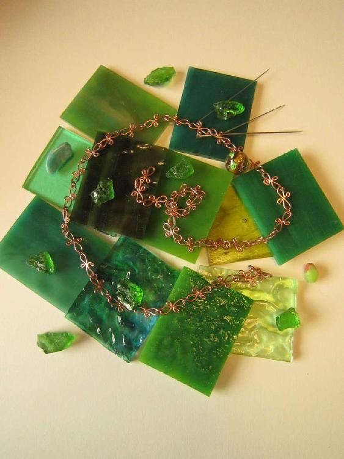

| さぼてんと行こう (イーデスブックス) | |
| 井川林檎 | |
| (2018) | |
さぼてんと行こう
目次
表紙：コハ
巻末アート：九藤朋
その物件は、まさに掘り出し物だった。
担当の中年女性も融通が利く人で、一刻も早く部屋を、しかも極安で、と焦るわたしの事情を察してくれた。幸運だったと思う。
「古いアパートで、窓は大きめに作られていて、明るいですよ。いろいろ傷んだところもあるけれど、一応見てみられますか」
宅地建物取引主任者という肩書が名札に印字してある。物件を探しに立ち寄ったその足で「じゃあ今から参りますか」と、住所を教えてもらい、別々に現地集合することになった。
寒い日で、町はまもなくクリスマスを迎えようとしていた。
おとといの大雪が未だに残っていて、汚れた雪が路肩に山になっている。目印となるスナックを見つけ、車が途切れず、ひどく曲がりにくい十字路を右折、それから閑静な住宅地に入る。わたしの車にはナビなどついていない。十年目になる軽四は、曲がるときにギリギリと音を立てる。その音を聞くたび、買い替えるとしたらずいぶん先の話だから、それまで何とか持たせないと、と、憂鬱になった。
ラーメン屋のはす向かいに、その物件はあった。
看板だけはお洒落に銀色に光っていて「さくらアパート」と細く彫ってある。
担当はもう着いていて、駐車場で待っていた。
「さあ行きましょう」
にこっと感じよく笑う。セミロングの五十代女性。
二階のその部屋を見せてくれている間も、嫌みにならない話し方で、それでもものすごく巧みに、女性はわたしの事情をすっかり聴きだしてしまった。しかも、一方的に聞き出されたという印象を残さないためだとは思うが、自分自身の身の上も少し話してくれた。
「女は強くなるものですよ。わたしもそうでしたから」
と、宅地建物取引主任は近所のおばちゃんみたいな気安さで語った。
「宅建の資格だって、黙って、こつこつ勉強して取ったんです。資格を取ったらすぐに今の会社に転職して、それで離婚調停。今は娘と一緒にマンションで暮らしてるんですよ」
ＤＶの夫に長年苦しめられ、月給の安い事務職をこつこつと続けていた。夫と離婚するとしても、今の月給では娘と一緒に生活するのは不安、だから宅建をとった――と、いうのが彼女の身の上である。
「安い物件を探しておられる気持ちもよくわかりますよ。女一人、お金は大事。その点、このアパートなら敷金もありませんし、家賃も破格だと思います。事情は分かりましたから、それは大丈夫ですよ、安心して」
と、わたしの肩をたたき、歯を見せて笑った。
わたしの「事情」と、共通する部分があるから、親身になってくれたのかもしれない。職務の範囲で、だけど。
その物件は本当に、わたしにしっくりきた。
２ＤＫという条件も良い。一部屋だけだと息が詰まってしまう。
窓が大きくて日あたりが良いのも嬉しかった。ずっと日当たりの悪い場所にいたのだから、光に飢えていたのかもしれない。
駐車場込みとは思えない安価な家賃には、何か事情があるのかもしれないと思ったが、「事故物件ではありません」と胸を張って言いきられたし、ここに決めようと思った。
書類は後日郵送しますから、それでは、と、担当さんは頭を下げて、猛烈な勢いで帰ってしまった。
平日の日中、住人はみな仕事に出かけているらしく、がらんとした駐車場に立って、わたしは建物を見上げる。
白いコンクリ。二階建て。四棟あって、そのうちの一階の一室では、物干しのところに子供用のミニカーが置いてあった。ファミリーも住んでいるのだろう。
車に乗るとき、ふと空を見ると、曇天ではあったが、雲の切れ目から光の帯が見えていた。
溶きたまごの味噌汁みたいだ。モヤモヤの中に、汁の色と黄身、白身が模様になっていて。
天から差し込む光のはしごは、何かの暗示だろうか。少しだけ、重苦しさが薄れた。
（明るいところに、出よう）
出られる、大丈夫、そうしなくては。
この住処で。
わたしはエンジンをかけた。
＊＊
見てくれは瀟洒だが、中に入ったら昼間でも日のささないアパートに戻る。
外出から戻るとき、いつも緊張が走る。まず駐車場を見て、あの人目につく、派手なスポーツカーがとまっていないかを確認し、とりあえずほっとしてからカギをあける。
その物件はメゾネットで、二階にリビングと寝室がある。
昼間でも電気をつけなくては足元が見えないほど薄暗い階段を、そろそろとのぼる。なぜか息をひそめてしまう。そうして二階に上ってそこでも明かりをつけず、まず、ざっと見回した。
大丈夫、異常はない。
二人暮らしのアパートで、留守中に誰かが入った気配がないことを、異常がないと言うのもおかしいのだが。
結婚して二か月目。
旅行から帰ってきたその日から、夫は親元に引きこもってしまったから、一緒に暮らしたのは実質一日。
夫の家はこのアパートから車で五分もしない場所にあって、あの晩、このアパートから飛び出して以来、戻らなかった。もしかしたら戻っているかもしれない、と、外出から帰るたびに思うのだが（決して帰っていてほしいと願っているわけではなかったけれど）常にアパートはがらんと暗くて、いつもわたしは一人だった。
夫の実家に電話をかけてみても、出るのは義母で、「今は疲れているから」とか「あなたのこと嫌いって言ってるの」とか言うだけで、本人と喋ることはできないままだ。メールにしても、こちらから送っても一向に返信がない。
生活費は切れようとしているし、わたしはパートに行き始めたばかりだから、お給料がまだ入ってこない。
離婚、というキーワードはかなり早い段階から頭の中にあって、日がたつにつれて、それは決意に変わっていった。
別れることさえできれば、ここから脱出できる。別れることさえ、できれば。
それには何より、連絡を取ることが必要だった。
それが、どうしても、できない。
メールをしても電話をしても、直接行っても、締め出しをくらう。
お金だけが目減りしてゆく、先の見えない生活。この、暗いアパートで。
だけどそれも、もう終わらせなくては。
この高級で暗い住処で寝ていると、夜中に汗びっしょりになって飛び起きることがよくあった。
頭のてっぺんから、つま先まで。今は冬だから、暑いわけではない。
大きな玉のような汗がびっしりと肌に浮いていて、全身着替えなくてはならないほど濡れている。自律神経がやられているんだろう。
新しい住処となる、あの物件には、契約が成立しだい移ることに決めた。
だから、ここで寝泊まりするのも、あともう僅かだ。
生活に必要な最低限のものをまとめて、カバンに纏めておこう、と思う。この抜け殻みたいな部屋の中で、それはすごく明るい考えのように思えた。
カーテンもしめずに、わたしはせっせと荷物をまとめ始めた。
銀行通帳と、着替えと、食器。それと、親しい人たちから結婚のお祝いにもらったもの。これをこの部屋に置き去りにすることは、心が痛むことだ。カーテンは明日買いに行こう、と、思う。今日の下見で、窓の寸法を測っておいたのだ。明るい色がいい。オレンジ色のような。
ふっとわたしは呼ばれたような気がして、背後を見た。
暗い台所が、どんよりと沈み込んでいる。
もう夜だ。時計を見ると、六時を示していた。
点灯し、ベランダのカーテンを閉め、振り向いた時、わたしははっとした。
さぼてんの鉢がひとつ、テーブルに乗っている。
真みどりのそれは、冷たい部屋の中でたったひとつ、明るい光を放っていた。
それはわたしの――数年前にわたしが購入した――さぼてんだった。
忘れられ、うちやられていたくせにそれは、連れて行ってくれ、と言っている。一緒にいく、と。
アパートの他の部屋からは、そろそろ食事のにおいが漂い始めていた。
香ばしい、温かなよい香りが入り込んでくる。
おなかも空かない。炊飯器は黙り込んでいる。もう三日、使っていない。
最低限のものをまとめたカバンを前にして、わたしはぼんやりと座り込んでいたのだが、思い立って、さっきのさぼてんのところに行った。
土が完全に乾いている。
さぼてんの体はまだまだ瑞々しかったが。
わたしは霧吹きで、何度か土を湿らせてやった。そうすると、さぼてんから感じていた、張り詰めたようなものが少し和らいだ気がした。
ありがとう。
そう聞こえたのは、どういう意味だったのだろう。
さぼてんが？
それとも、惨めさで死にそうになっていたわたしの深層心理が？
何にしろ、確かにそれは心に届いた。
じんわりと浸みこむように、ありがとうという言霊が体の中に入ってきたのだった。
わたしは、お米も持って行かなくちゃとやっと気が付く。食器だけじゃなくて、鍋とか炊飯器とかも必要だということに、ようやく気が付く。
生きて行かねばならないから。
そして、今もわたしは生きているので、何かを食べるべきであるということに、ようやく気が付く。
どこかの部屋で肉を焼くにおいが、ここまで漂ってきている。
テレビはゴールデンタイムにさしかかろうとしているし、どこの家でも温かなだんらんが始まっていることだろう。
最後に食事をしたのがいつだったのか、まったく思い出せないことで急に焦りを覚えた。いけないだろう、このままでは。さすがに。
それでわたしは、さぼてんを見ながら、とりあえず礼を言った。
この事態で、食事をとることを思いつくことが良いことなのか悪いことなのか分からないが、とりあえず。
もしかしたら、何も食べないまま知らないうちに倒れてしまって、干乾しになってしまうほうが、マシなのかもしれないけれど、とにかくわたしは生きることを選択した。
さぼてんに一瞥をくれてから、わたしは近所のコンビニに行き、鮭弁当とお茶を買って引き返した。
そして、さぼてんを見ながらそれを食べた。
＊＊
夜はどんどん更けてゆく。
わたしはもう一度玄関に行き、施錠とチェーンを確認してから風呂を沸かした。
奴が帰ってくる恐れからは、ここにいる限り逃れられない。
もし、万が一、帰ってくることがあれば、わたしはどこに逃げればよいのだろう？
あいつが一人で戻ってくることはあるまいと思う。
あの家族と一緒に、集団で、わたしを取り囲みに来る。
来られては逃げようがないから、最悪の地獄を防ぐには、誰も入ってこれないようにするしかない。
風呂が沸く。
入浴後、布団にはいる際には枕元に包丁を置く。
万が一、侵入されたら。
そして、寝ているところに現れたら。
体に触られたら（ああ、鳥肌がたつ）、暴力をふるわれたら。
一番避けねばならないことは、このような状態の中で、とち狂った相手に力任せに奪われることだ。そして、子供ができてしまったら。
（殺してやる）
寝る前の暗闇は、冷たく深く、粘ついていて絡みついてくる。
包丁の刃が頭の上で鈍く光る。
（......殺してやる）
＊＊
ぞうっと背中に何かが走って、わたしは目を開けた。
暗闇だ。
時計を見ると真夜中の二時である。
起き上がると、例によって体中びっしょりだ。枕元の包丁は相変わらず光っているし、あーあとため息をつく。
そして、中毒のように携帯を触る。メールに返信がきていないか、着信がきていないかを確認するのだ。
期待しているわけではないが、やはり何にもない。
たぶん、世界の終わりまで、返信は来ないだろうと思う。
相手は、離婚しないままでも困らないのだ。あの両親の間におさまり、ご飯を食べ、会社に行き、会社では「よっ、新婚さん、どうよ」と聞かれ「ははは、どうといわれても」とか答えて笑い、また両親のいる家に戻ってごはんを食べ、お風呂に入り、寝る。それが永遠に続いても、別に困らないのだ、相手は。
無視するということは、時に最大の暴力となる。
もし、本当に誰かを裏切り、さげすみ、ゴミのように扱いたいと思ったら、無反応、無回答を貫けばよい。
最も効果的に、苦しめることができる。
とりあえずタオルで全身をふき、手早く着替えてしまってから、汗でぬれたものを洗濯籠に放り込みに行く。
台所を通ると、テーブルには緑色のさぼてんが、しゃんと立っている。
さぼてんの視線を背中に受けながら冷蔵庫を開ける。
しなびたキャベツと、玉ねぎ、それからワンカップが二つ。迷わずワンカップを一つ手に取り、開封する。
日本酒の香りは、質の良いチョコレートに通じるものがあると思う。暗闇の中で、そしてこんなわけの分からない精神状態でお酒の香りをかぐと、どこか別の世界に連れて行かれそうになる。
ちびちびやると、喉が熱くなった。ほうっと、身体のこわばりが解け、お風呂につかったような安らぎがやってくる。
なぜか、吉幾三の、あの有名な演歌が頭の中でこぶしをきかせ始め、こういう最悪な状態なのに、ぶっと噴いてしまった。
ふと振り向くと、さぼてんがぼわんと膨張して見える。酔いが回ってきたらしい。
（しっかりしなさい）
と、いうのも、たぶん空耳だ。
へらへら一人笑いしながら、とりあえず立ったままワンカップをぐびぐびやっていると、
（しっかり、しなさい）
もう一度、なにかがわたしを叱咤した。
わたしはテーブルにワンカップを置くと、さぼてんに向き直り、よく眺めてみた。
見つめれば見つめるほど、涼しい気配が体を包むような気がする。
さぼてんが意思を持っているのではないかと思い始めたのは、ずいぶん前からだ。
花屋にいくと、わたしは必ずさぼてんが並ぶ、観葉植物エリアに入り込む。
小さなさぼてんは愛らしく、大きなさぼてんは頼もしい。どっしりとした、安定した存在感で、じっと見ていると穏やかな気配で包み込んでくれるような気がする。
「えー、さぼてんとか痛そうだし」
と、この部屋にさぼてんを連れてきたとき、あの男は言った。
どんなにさぼてんについての思いを説明しても、理解しようとしなかったあの男と、わたしはどうして結婚までしてしまったのかな。
引き返そう、と思ったポイントはいくつもあったのに、だらだらとここまで、成り行きに任せて。
どんづまり。
さぼてんの前に座ってワンカップをちびちびやりながら、わたしは目を閉じる。
デッドエンド？
いや、そうじゃないでしょう。
（今からだよ）
そんなささやきが聴こえたような気がして、わたしは酒臭い息を夜明け前の台所に吐き出したのだった。
それは、思い出すのも苦労するほど、最低最悪のブラックデーだった。
パートで始めた事務職は、一日じゅう事務所でパソコンと向き合う仕事だった。同じ仕事に従事する女性は数人、その中の一人が正社員。後はパートと派遣社員だ。
だいたいこういった事務所では、お姫様的存在があるものだが、うちの事務所も例外ではない。二年ほど先輩の主婦パートが、その身分を手に入れていた。仕事も彼女が一番優れていることになっていたし、昼食時も彼女の喋り声が食堂に響き渡っている。化粧も完璧、毎月美容院通いしている髪の毛はつやつや。顔立ちもスタイルもそこそこである。
その彼女と、衝突してしまった。
きっかけは他愛もないことだ。
ただ、あの会話はわたしにとって地獄だった。わたしの事情をうっすらと察していたはずなのに、彼女はウキウキした自分を抑えなかった。
「クリスマスはどうするの」
という、たった一言がわたしの神経に触れた。
「いや、うちはほら、離婚まちというか」
隠すのも嫌なので、ここに入社してから「だんなさんは」と聞かれると、さらっと言うことにしている。
たいていは、気まずそうに話題をそらしてくれるものだが、お姫様は勘弁してくださらなかった。
旦那のボーナスは全額自分が握っていること、だから何を買おうかな、子供は寿司が好きだからクリスマスは回転寿司に行って、子供限定のおもちゃをもらって......。
わたしは不機嫌面をしていたのだと思う。
それで、彼女のウキウキ気分を害してしまい、その後、午後の仕事で彼女から嫌がらせを受け、ついに。
「あの」
静かな事務所の中で、わたしの声はいやおうもなく目立った。
わたしは文字通り、ブチ切れていたのだと思う。
「お願いだから、もう絡まないでくれます。本当に嫌なんです」
それどころか、完全に精神的にいっちゃっていたのだと思う。俗語で言うと「ファビョ」った状態だったのだろう。
こんなブチ切れ方は最も愚かなことだったと、言い放った後で気づいた。姫は、無言でうなだれてわたしの言葉を受け、ついでに事務所中の視線を受け、沈黙の後、しくしくと泣き始めたのだった。
そこに課長が戻ってきて、この状態を見て、わたしに「ちょっと来てくれる」と言った。
＊＊
会社が終わる。
更衣室でもわたしは浮いていた。周囲の視線が突き刺さるように痛い。
そそくさと私服に着替え、駐車場に向かう。
あの、昼間でも日の差さない暗いアパートへ帰らねばならない。
新しい住まいの手続きはすでに完了しているのだが、まだ、このアパートを離れられない理由があった。
離婚が成立するまでは、下手に動かないほうが良いとプロが言うものだから。
「とにかく、一度、なんとかして彼を引きずり出して、双方の両親が同席して話をする６者面談を行ってみてはどうでしょうか。話をしないことには次のステップには進めない」
と、法務局の人は言った。
えんえんと続く無視、無回答の日々はもう三か月になろうとしており、何とか状況を打破しようと思ったら、法律面からのアプローチしかなかった。それで、つい先日相談に行ったのだが。
「今多いんですよね、マザコンと言うんですか、親から離れられない男性。結婚して早々、実家に戻ってお嫁さんは放置、お金も入れない......あなたの場合は」
と、同情をこめた目でわたしを見つめ、ぐっと机から身を乗り出して言う。
「まだ、実家の親御さんが元気ですし、幸い、妊娠もしておられないようだから、傷は浅い......と思ってください」
はい、ありがとうございます、と、気の抜けた声でわたしは返事をした。
「とにかく話をしたという事実を作ってから、それでも状況が動かないようなら......まあ恐らく、こういうタイプの男性とその親は変わりませんが......離婚調停、という方向に進みましょうか。そうなったらまたおいでください」
話もできない相手と離婚する場合でも、それなりのステップを踏まなければいけない。そうすれば有利に進む。
頑張ってくださいね、と言われて立ち上がりかけ、はっとしてわたしはまた席についた。どうしても聞いておきたいことが一つ残っていた。
わたしの感じていた、ある恐れ。
「あの、ネットで調べてみたんですが、もし夫が......」
恐る恐る話してみた。すると、法律のプロは熱心に耳を傾けてくれ、やがて苦い表情になり――。
＊＊
ぐちゃぐちゃの気分で車を運転する。
今にも泣き出しそうな空は灰色で、重苦しかった。
このまま帰りたくなかった。
でも、いきつけのスーパーに行くのも嫌だった。会社の同僚もそこに通っている。今日のできごとを知る人に会うのは嫌だった。
それでわたしは、さぼてんのたくさんある観葉植物の店に行くことにした。
少し車を走らせた先に、ホームセンターがある。その一角に、そのお店はあった。
そこは、切り花や鉢花よりも観葉植物のほうが多い店で、ちっともお洒落ではないかわりに、なかなか見られないようなさぼてんが展示してあった。
そのお店の、大きな玉さぼてんを、わたしはこよなく愛していた。
特にこのところ、重苦しく逃げ場のない気分が続くので、その玉さぼてんに会うためだけに、わたしはホームセンターに通った。定休日の日は心からさみしく、切なかった。それほど愛していながら、人の頭ほどの大きなサイズであるがために、お値段その他の制約があり、なかなか手が出せないままだった。
さぼてんに会いに行こう、と思った瞬間、ほんの少し心が軽くなった。
明日から仕事どうしよう、という重たさがなくなったわけではないが、そうだわたしにはさぼてんがいる、と思うと、妙に安心した。
わたしは車をホームセンターに向かわせることにする。
この信号交差点を左折。タイミング悪く信号が赤になる。
それまでタラタラ走っていたワゴンが、黄色から赤になる瞬間、猛ダッシュで走り抜け、続くわたしの車は後続車と一緒に取り残される。
（なにが、ベイビー・イン・カーだ）
最低なワゴンの尻には、ピンクの可愛らしいステッカーが貼り付けられていた。
赤ちゃんが乗っているからよろしく。だからタラタラ走るの許されてぇ。
ぎゅうぎゅうに積まれていた、たぶんゲーセンでゲットしたぬいぐるみの山とか。
後方からチラッと見えた、チャイルドシートとか、それに付けられた揺れるおもちゃとか。
また、重たくて暗い塊が胸にのしあがってきた。
なかなか変わらない信号を見ながら、わたしは昨晩のことを思い出す。
＊＊
法務局のアドバイスに従い、わたしはその日、車で二時間の実家を訪れ、両親と相談し、六者面談の計画をたてた。
わたしからの連絡は一切スルーされるため、実父から相手の家族に連絡を取ってもらう。
「おたくの娘さんとお話しするの、嫌だって言ってるんですよねぇ、うちのこ疲れてるし」
と、のらりくらり、迷惑そうに先方は喋ったのだが、怒りをこらえた実父が六者面談の話をすると、オーケーが出たという。
どうやら後ろに控えていたらしい夫に向かい、電話で実父と話していた義父が「どうする、やっくん」と聞き、微かに義母が「嫌なんでしょう、嫌よねえ、やっくん」と言っているのも聞こえ、だいぶモタモタ何か言い合っている様子だったが、最終的には「まあ......少しだけなら。仕方ないですねえ。本当にしかたのない娘さんですねえ、迷惑なんですけどねえ」と、色々言いながらも、六者面談の日取りが決まった。
なにがやっくんだ、三十五歳にもなって、と、実父はタコみたいな顔で怒り、実母はあきれて脱力しながらも、「とりあえず話はできるようになったよ」と、わたしに言った。
場所はアパートで。
時間は夜の八時。
「......もっとよく見て、慎重になればよかった。おまえをやるべきではなかった」
と、いっぺんに十年くらい老けた顔をして、父が言った。
そして、六者面談の夜。それが昨晩のことだ。
ものすごく久しぶりに、夫の姿を見た。夫は両親の陰に隠れるようにしており、手に漫画雑誌を持っていた。
夫たち一行をアパートに迎え入れてから、わたしの両親が入る。
玄関まで出てきたわたしを、義父と義母はじろじろと睨み、すれ違いざまに「迷惑な人ですね、困ったものですね」「どういう育て方をしたら、こんな人になるのかしらね」と言い捨て、階段をあがっていった。
メゾネット式だから、二階にリビングがあるのだ。
夫はわたしから顔をそらし、横を向いたまま、母親の尻を追うようにして階段をかけあがった。
次に両親が入ってくる。二人とも黙ったままわたしの顔を見てうなづき、静かに階段をあがった。
それからのことは、思い出すと眩暈がする。息が出来なくなりそうになる。
わたしの両親は、リビングの隅、ほとんど台所の床に正座をして座り、場を見守っていた。
わたしと、夫とその両親が話し合うのだが、話し合いと言うより、暴言大会だった。
まず、わたしが持って行ったお茶を「いらないですよ」と突っ返し、次に、盛大な悪口をぶつけ始めた。夫ではない。夫は終始黙ってうつむいており、持ってきた漫画雑誌を読んでいた。
「あなたね、新婚旅行の時、やっくんの言うこときかなかったんですってね」
「やっくんはホテルのレストランがいいって言うのに、あなたは逆らったんでしょう」
「レストランで食べたかったなあ、ってやっくん残念がってましたよ」
わたしは黙って聞いていた。今は言いたいだけ言わせる。それで、両親にも状況が分かるだろう。
「それとあなた、旅行から帰った後、魚焼いたんですってね。やっくん魚嫌いなんですよ」
「酷いじゃないですか、魚嫌いな子に、しかも新婚早々」
わたしの背後で、母の息遣いが聞こえた。父が小さな声で「大丈夫かおまえ」と気遣っている。
そんなわたしの両親のことなど全く無視で、夫の両親は止まらない勢いで言い続ける。
「それで旅行中や、こっちに帰ってから、やっくんがわたしに電話したりメールしたりするのを見て、あなたは嫌な顔をしたんですってね。母親に連絡を取るのは当たり前でしょう、何を考えているんですか」
はい、そうですね、あなたの息子さんは新婚旅行中、しょっちゅうあなたに電話したりメールしたりしていました。あなたも旅行中、二時間おきに電話してきましたよね。
わたしは黙って聞いている。
（そして、あの晩。新婚旅行から帰った晩......）
あの晩も、夫は義母に電話をしていた。わたしが入浴中だとばかり思っていたのだろう。話している内容を聞いて、わたしは愕然とし、不覚にも傷ついて――。
だが今晩は六者面談だ。回想している場合ではない。わたしは唇を噛んだ。言いたい放題言わせるのだ。そういうことを言われたという事実が、今後、いきてくる。
「だいたいねえ、あなたのその大きな目が気持ち悪いんですよっ」
「そうそう、ねえ、見ないで気持ち悪い。いやらしい目だわ」
耐えきれずに背後で母がすすり上げる音が聞こえる。
その間夫は無言でうつむき、まるで自分には関係がないことのように漫画を読み続けている。
えんえんと続く自分の悪口を、わたしは聞き続けていた。
（そう思われていたのか）
いつからだ。ひょっとして、結婚する前、はじめて顔を見た時からか。
やがて相手は勝手に切り上げた。
「もう真夜中じゃないですか。本当に迷惑な。呼びつけておいて長々と」
時計は午前一時を示している。
がたがたと相手達は立ち上がり、またわたしをじろじろ睨んで通り過ぎてゆく。
「はやく行こう行こう、こんなところにいたくないわ」
と、義母が言う。
親にくっついて夫も出てゆこうとするのを、その時、鋭い声で実母が引き留めた。
「ちょっと、肝心なことがまだですよ」
それは、この地獄のような晩、うちの両親がはじめて喋った瞬間だった。
「あなた方は出てください、わたしたちも出ます。後は二人のことです」
実父もきっぱりと言い、戸惑っている義両親の背中を押して部屋を出た。
両親の後をついてゆこうとしていた夫は青い顔で取り残される。そして、わたしの顔を見ないよう、嫌そうに横を向いた。
わたしは――もう、へとへとに疲れていたのだが――息をつくと、夫に向き直った。
そして、言った。
「どうするの、これから」
「へ、どうするって」
というのが、夫の答えだった。
「ここに戻るの」
「......ん、まあ、いつか」
「いつかっていつ」
「......考える」
「わたしと続ける気はあるの」
「......まあ」
「じゃあ、このままじゃ無理だよ。戻ってこないと」
「だから考える。明日...ううん、待ってまだ。とにかく考えるから」
素早く立ち上がって、わたしの横をすり抜けて出て行った。
とんととん、と奇妙なリズムで階段を下りてゆく。
わたしはその後を追って玄関を出た。
もうじき丑三つ時を迎えようとしており、外は真っ暗だ。
わたしの両親と義理の両親の車が止まっている。わたしの両親は車の中だが、義理の両親は外に出ていた。
奇妙な、まるで幼児が母親の後を追いかけるような走り方で夫は自分の両親の元に戻った。聞こえよがしの話し声が聞こえてくる。
「やっくんひどい目にあったの、大丈夫」
「......うんもうこんなところ嫌だ。帰ろう、帰ろうよ」
「そうだね帰ろう。本当になんて困った人だろうね」
そう言い合いながら車に乗り、すごい勢いで帰ってしまった。
残されて、ぽつんと立っているわたしの元に、両親が車から降りてやってきた。
赤く目を泣きはらした母が、じっとわたしの顔を覗き込んだ。
「覚悟はいいね」
と、母が言った。
離婚で決まりだね、未練はないね、という意味だ。
もとからそのつもりのわたしは、「はい」と頷くと、両親に頭を深く下げた。
本当に、本当に、これ以上の親不孝はありません。本当に。
＊＊
はっとした。
昨晩の悪夢からまだ覚めていないみたいだ。
気が付くと、ホームセンターの中の植物売り場に来ていた。
ふらふらと運転し、夢遊病みたいにここまで行きついたのだろう。よく事故を起こさなかったものだ。
気を取り直してわたしは切り花の間をすり抜け、奥の方のさぼてんたちに会いに行った。
玉さぼてんは元気だ。相変わらずそこにある。
見つめた瞬間から、ふわっと涼しい気配に体が包み込まれ、いためつけられた心が慰められた。
恋人の元に駆け寄るように、さぼてんの前に来るとしゃがみこむ。ちょうどさぼてんとわたしの顔が同じ位置にきた。
見つめあうと、不思議な安らぎを感じる。
永遠に続くまばゆい緑の道が目の前に広がるような気がする。
生きるエネルギーに満ち溢れた、穏やかな、偉大なる緑がわたしに向かい、手を広げている。
いつもそうするように、さぼてんに向かい目を閉じる。
涼やかな気配はわたしを包み込み、まるで光のシャワーを浴びているような気持になる。
（生きているの）
わたしは心でつぶやく。
（まだ、こんな状況でも、生きているの、わたし......）
＊＊
嫌な、神経にさわる声が聞こえた。
植物売り場に、オレンジ色のコートとグレーのフリースの二人連れが来ていた。
それが夫と義母であることに気づくと、一瞬目の前が真っ暗になり、わたしは床に片手をついた。
さぼてんの鉢の後ろに回る。
幼子とその母のような二人は、楽しそうに笑っていた。
昨晩のようなことがあった後で笑っていられるということが、わたしにはとても嫌だった。
息が苦しくなった。がくがくと全身が震えてくる。
二人はだらだらと切り花の前に立ち続けた。
けらけらと笑っている、義母。
（そうか、わたしは）
その様子を見ているうちに、微かに感じていた予感に確信がついてくる。
それはある意味、恐怖と背中合わせの現実を示していたのだが、同時にその真実は、微かにわたしを慰めた。
（わたしは、この男に結婚することができた男、という肩書を与えるためだけの小道具だったんだ）
何で気づかなかったのか。
いや、わたしはどこかで分かっていた。なのに、見て見ぬふりを貫いた。
アラサーで、焦っていたから。わたしも、結婚できた女、という肩書が欲しかったから。
どこか幼い仕草と喋り方の夫を遠目で見ているうちに、すべてが見えたような気がした。
昨晩の夫の異様な様子。
「精神障害を持つ配偶者との離婚は、簡単には進まないことが往々にしてあります」
法律のプロの言葉が蘇る。
わたしは目を閉じた。簡単には進まない。そうだ、とても困難を伴う。
ジ・エンドか。
＊＊
すっと、肩に優しい気配が触れた。
それがあまりにも優しく、無条件の愛に満ち溢れていたため、わたしはそのままもたれて泣きじゃくりたい気分になった。そして、わたしはそうした。
涙がざあざあとあふれてきて止まらなくなった。......店の中で。
しかし、夫と義母は、ここにわたしがいることなど不思議に気づかずに、そのままレジを済ませ、店から出て行ってしまった。
分からないはずはないのに。普通なら気づくはずなのに。
いくら大きなさぼてんだからといっても、わたしの体は隠れていない。
にも関らず、全くわたしに気づかずに、二人は去った。
無視しているわけではなく、本当に気づかなかったことは、あの楽しそうな様子が全然変わらなかったことから分かる。
それだけではなく、ホームセンターを行きかうたくさんの客たちの誰もが、手放しで泣き続けるわたしに気づかずにいたのだ。
（泣きなさい、今。さあ）
緑の気配に庇われて、人々の視線からかくまわれて、わたしは思う存分泣くことができた。
結婚する前のこと、してからのこと、昨晩のこと、そして今日のできごと。
一度に押し寄せてきた。
泣いている間、わたしはずっとさぼてんの愛に包まれていたのだと思う。
＊＊
鼻をがびがびにさせて、閉店間近の店を、しょんぼりとわたしは出る。
泣きすぎて視界がぼけていたし、やたらまぶたが重かったが、気分は少しだけすっきりしていた。
すっかり日が暮れて暗くなった駐車場。
車に乗る前に、まだオレンジ色が漂う空を見上げた。目が痛い。
（さぼてん様）
と、わたしは心の中でお礼を言った。
玉さぼてんには足を向けて寝られないと思った。
大勢の人がいる中で、これだけ思う存分泣けたというのは、奇跡ではないか。
このタイミングでないと泣けなかったのかもしれない。
そう考えたら、今日の胸糞悪い出来事も、実はありがたいタイミングだったのかもしれない。
明日以降、わたしは動き出さねばならない。
もう待つ時期は過ぎようとしている。
あと一週間待って夫が戻らなかったら、わたしは次のステージに移る。
仕事は続けなくてはならない。
そして新しい住居に必要なものを運び、いつでも逃げ込めるようにしなくてはならない。
カーテン、布団、衣類、食器、調理器具。
そして最後に、わたし自身と、大切なさぼてんだ。
すうっと息を吸い込んで、わたしはあのアパートに戻るために車に乗り込む。
大丈夫、やれる、大丈夫。
わたしはアクセルを踏んだ。
・話し合いから十日たったが、相変わらず戻ってこないこと
・こちらから連絡を取ろうとしても不通状態が相変わらず続いていること
・このような状態で、このアパートに生活するのは苦痛であること
・よって、新生活を別の住居で送ること
・そのためには炊飯器、電子レンジ、掃除機等の電化製品および家具が必要なので、こちらから費用を出して購入したものについては運び出すこと
・必要な品を取りに戻るため、何度かこのアパートに出入りするが、全て搬出が終わったらカギを返還するということ
・結婚を続ける気持ちがあるのなら、７日以内に連絡をしてほしいということ
これらのことを、ごく簡潔な文章にしてメールで送った上で、手書きにしたものを書留で送付した。手書きのものはコピーを取ってある。そこには日付も入れた。メールは証拠として残る。
これだけのことをしてから、わたしは本格的に引っ越しに取り掛かった。
テーブルと食器棚を持ち出すのは、ちょっとした冒険だった。
一人では無理なので実父に手伝ってもらったが、作業の間、いつ連中が現われるかひやひやだった。
まあ、もし本当に現れるのなら、とっくの昔に姿を見せていただろうから、そんな心配自体、杞憂なのだけど、とにかくナーバスになっていたわたしは、このアパートにいる間は、小さな物音にも反応するようになっていた。
メゾネットの急で細い階段を、荷物を持って降りる。
老いた実父が顔に汗を浮かせているのを見ながら、わたしも慎重に階段を下りる。二人がかりで頑張って降ろすと、実父の田んぼトラックに積み、新居となる件の安アパートに向かう。
この時もわたしはびくびくとした。
実父の田んぼトラックとは別に、自分の軽で向かった。運転中は忙しく眼球を動かして、見覚えのある人や車がないかどうか確認していた。引っ越した先を、絶対に知られたくなかった。
家具を持ち込むと、実父は「もう大丈夫か」と確認し、わたしの差し出したペットボトルのお茶を受け取って帰って行った。
がらんとした新居は光がさしこんで、どこもかしこも明るかった。床が白かったのもあるのだろう。
日中でも薄暗い場所に住んでいたせいか、異様に眩しく感じた。
和室の押し入れには、既に布団がある。
今持ち込まれたテーブルに、炊飯器とレンジを置く。
ガスコンロはすでに購入してある。
それと、さぼてん。
そっと車に引き返すと、助手席に乗せてきたさぼてんを持って部屋に入った。
（さあ、来たよ）
心で呟きながら、さぼてんの小鉢を居間の床に置く。
何もない、カーテンが引かれただけの、わたしのお城。
窓を開けると、ふわっと冷たい空気が流れ込んできた。白いレースのカーテンが優雅に揺れる。
台所の窓も。和室の窓も。
次々に窓を開き、外の空気をめいっぱいに部屋に入れる。
久しぶりに気分が高揚した。足取りも軽く居間に戻ってくると、わたしの大切なさぼてんが待っていた。
明るい緑で、外からの光を一身に浴びながら、彼（？）とわたしは「ふう」と息を吹き返した。
＊＊
簡易書留の裏書には、実家の住所を書いておいた。
一応、実家に戻っているわけではないですよ、という意味の文面は入れておいたので、わたしが実家以外の場所で暮らしていることは分かるはずである。
こういう状況ではあったが、まだわたしたちの間で「離婚」という言葉は口に出されていない。
わたしは心の底からそれを願い、夫側は恐らく、結婚しているという状態を失いたくないはずだから、このままだらだらと法的な婚姻関係は続けたいはずだ。
できるだけ早く離婚をして、あの酷い家族との縁を切ってしまいたいのはやまやまだったが、法律は面倒くさくて、万が一、慰謝料とかの裁判になった場合、先に「離婚」という言葉を言った側が不利になるらしい。
慰謝料って何の慰謝料だよ、こっちがもらいたいくらいだよ、とわたしは思うのだが、相手が相手なので、「精神的苦痛」を訴えられでもしたら、面倒くさいことになりかねない。
そして、そんなシチュエーションは容易に想像がついた。
やっくん、あなたに振り回されて疲れ切ってしまって、もう会社に行きたくないって言ってるのよ。お医者さんに行ったらウツじゃないかって言われたのよ。どうしてくれるの......。
想像しただけでげんなりした。
さぼてんがあきれて笑ってるじゃないか？
溜息をつきながら、さぼてんの鉢に霧吹きを吹きかけた。
外は、道の雪が解けてまるで春のようである。時間は正午にさしかかろうとしていた。
＊＊
米をといで、炊飯器をセットしていると、携帯が鳴った。
母からだ。
「無事に引っ越しが進んでいるみたいで良かった」
と、母は言い、何か必要なものはないか、ときいてくれた。
今は特にない。軽であと三往復くらいして荷物を運び終わったら、あの暗いアパートとは完全におさらばするつもりであることを、わたしは言った。
そう、よかった、と母は静かに言った後、奇妙に緊張をはらんだ声に変わった。
「あのね、ちょっと気になっていたんだけど」
母は、極力感情を抑えるような喋り方をしている。
「この間の彼の様子を見て、もしかしたらって思ったんだけど、あの人、まさか軽度の」
軽度の、知的障害か何か、そうじゃないにしても、何か精神障害、それも先天性の――。
どきりとして、わたしは口をつぐんだ。
わたしの雰囲気を受話器の向こうで察したらしい母は、しばらく無言になったが、やがて場所を移動する音が聞こえた。父に聞こえないよう、廊下に出たのかもしれない。わたしは体を固くした。
「やっぱりそうなの」
と、きかれて、わたしはどう答えるべきか少し戸惑った。
「わたしも確証はないんだけど。もちろん相手側からそんなこと聞かされてないし。でも、やっぱりおかしいとは思った」
こういう言い方しかできない。実際、そうなのだから。
母は詰まったような声で言った。
「いつからそう感じていたの」
「六者面談の晩に確信した。でも今から思うと、変だな危ないなって思うことは、何度もあった」
「ばかね」
母が涙声になり、わたしも泣きそうになったが、ぐっとこらえた。
「それが事実だったとしたら、離婚の決め手にならないの」
と、母が言うので、わたしはきっぱりと、そういうわけにはいかないことを告げた。
場合によっては、こういった障害を持っている配偶者との離婚はうまく運ばない。自己責任を持てない人間と判断された場合、その人の押すハンコには意味がなくなるのだ。
「だから、相手が隠している限り、明らかにするのは避けたほうがいい」
わたしは言った。言いながら、足元がどんどん沼に沈み込んでゆくような気がした。
からめとられて、動けば動くほど、深みにはまってゆく。澱んで底が見えない、深い沼。
母との電話が終わり、わたしはちょっと上を向いた。目の奥がつうんとしていた。
まだ、泣いている場合じゃない。まだ。
（ああ、本当に、なんてことだろう）
＊＊
ごはんを炊いて、食べて、風呂に入り、寝る。
朝起きて、顔をあらって、ごはんを食べて、身支度して、パートに行く。
帰ってきて、ごはんを食べて、風呂に入って、寝る。
その繰り返しの日々が続く。
新しい住居は広々として明るく、身体がのびのびとした。
毎朝窓をあけて風を通し、深呼吸をしてから出社する。
簡易書留を出してからかなり早くに実家から連絡があり「受け取ったって郵便局のはがきがきたよ」と、言われた。当然ではあるが、確実に相手はあの手紙を受け取っている。
だが、依然としてなんら反応はない。
その間、わたしは何度かあの暗いアパートに足を運んだ。
食器類、着替えなど、軽に乗る分だけ積んで新しい住居に運び入れた。
夫の、あの派手なスポーツカーはいつも見当たらなかった。しかし、わたしがここを去ってから夫が戻ってきた様子があって、わたしが持ち去った掃除機や炊飯器にかわり、新しい家電が運び込まれていた。
そればかりか、アダルト本が床中にばらまかれ、それを見ながら楽しんだ痕跡まであったりして、夫がここを遊び場としてエンジョイしている様子が伺いしれた。
パンツをひざまで下げて、お尻をつきだして笑っている女の子の写真を見ながら、わたしはふと思い出した。
結婚前、夫の実家の部屋に入ったことがあった。その部屋は整理整頓されていたが、エロ本の類が本棚にきちんと並べられていた。
それについて夫は「おかあさんが毎日掃除してくれるんだよね。こういう本まで見られるからちょっと恥ずかしい」と、言った。
六畳くらいの広さのその部屋は、ベッドと机と本棚で、みっちり夫の生活が詰まっていた。
結婚したらどこに住む、と聞いたら、夫は目を剥いて「ここに住む。君もこの部屋にいればいい」と言った。
その時は「無理よ」とにべもなく言い放ったのだが、今から思い返せば、色々突っ込みたい。
夫が整頓べたであることは、彼の愛車がゴミ車だったことからよく分かる。
今のこのアパートも、エロ本は出したまま、ティッシュも散らばり放題であるが、よく見ると、近い過去に掃除機をかけるなり、衣類を畳んでしまったりした痕跡があった。
（義母が、ここを訪れているんだ）
ぞうっとする。
（そもそも、何であの男は、ここに住んでいるんだ。実家が大好きなんだから）
対外的な理由も大きいだろう。新婚早々、実家に逃げてきました、しかも男の方が、というのは、まことにみっともない話だ。あの家は、そういう不名誉には耐えられまい。
義父は元役場の職員で、ＰＴＡの会長を務めたこともある。義母は社交好きで、茶道を近所の女の子に教えている。
夫は次男坊だが、おそくに生まれた子ということで、兄弟や両親から可愛がられて育てられたらしい。
うちの子は、幼稚園の時もおゆうぎ会で主役をもらって......。
少年サッカーでは必ずレギュラーをもらって......。
義理両親の自慢話が次々に思い出されるが、すべてが嘘くさいことに気づく。いや、実は気づきかけていたのだが蓋をしていたのかもしれない、わたしは。
バッティングセンターに遊びに行っても、ろくに打ち返せない男が？
ゲームセンターのバスケットボールを、ろくにシュートできないあいつが？
（よく結婚しようと思ったものだ、我ながら）
本当に、それが最大の謎であり、悔やみなのであるが。
＊＊
一か月が過ぎた。
その間、何度か大雪があり、寒波も酷かった週もあって、荷物運びは滞った。
あとほんの一回で、全部運び込むことができるのだ。
あの暗いアパートに残っているものは、結婚祝いにもらった人形だけなのだが、親しい友達からもらったこともあり、あそこに放置するのは忍びない。
生活に必要なものは全て搬入していたから、わたしも気が大きくなっていたのだと思う。
雪がじゃぶじゃぶ解け始めた小春日和の朝、わたしは今日が最後だと腰を上げた。
もちろんそれまで、一度も夫やその家族からの連絡はない。
メールと手紙で書き送った通り、これで夫が結婚を続ける意思がない、と判断することができるだろう。
かねてからそうしようと思っていた通り、これであのアパートに行くのは最後になるので、一応その旨を連絡した。夫にはメールを送る。不在ならカギは郵便受けに入れておきますと知らせておいた。次は夫の実家に電話をかける。嫌でたまらないが、こういうことを怠ると後で変な突っ込みを入れられかねない。
予想通り、電話には義母が出た。
わたしは淡々と話したが、突然義母が泣き出したので驚いた。
「お願いお願いそんなこと言わないでよお願いだから。あの子にはあなたが必要なのよ、やっくんあなたが大好きなのよ。あなたが好きで毎日泣いているのよ、お願いお願い、行かないでちょうだい」
感情が爆発して収まらなくなった様子だった。
今までの経緯があるので、わたしは薄気味悪くなった。全力ですがりつく相手に流されず、とにかく今日でアパートに出入りするのは最後です、カギは返しますから間違いなく、とだけ言いきって、すぐに軽に乗った。
こういう場合、相手の動きより早く終わらせてしまうしかない。
夫とその家族の動きが、全体的に尻が重く、のろまであることはよく知っていた。
だから、速攻で動けば敵はわたしに追いつくことはできないだろう、わたしはそう思い、あのアパートまで車を飛ばした。
本当にわたしは、気が大きくなっていた。
あんなに警戒していたのに、時間とは恐ろしいものだ。
そして、あの出来事が起きてしまった。
＊＊
到着すると、おやと思った。
夫の、派手なスポーツカーが停まっているではないか。
ここでわたしは引き返せばよかったのだが、今日で最後だと言い切った手前と、夫が一人なら何もできまいという小ばかにした思いが、わたしを大胆にした。
瀟洒な外観は、「シャイニング」のホテルを思わせる。もちろんそんなに大きくはないのだが。
お洒落なドアのカギはあいていた。
さあどうぞ、とでも言いたげに。
（口を開けて待ってる怪物のようだ。家の姿をした、怪物......）
そう思ったのにも関らず、わたしは中に入った。
相変わらず暗く、息が詰まるような造りのアパートである。外は小春日和なのに、中に入るとヒンヤリする。足元から冷気が立ち上ってくるような気がした。
上からテレビの音が聞こえている。暗い階段の頂上が、奇妙に明るかった。電気がついている。
わたしは深呼吸すると、一気に階段をあがった。
夫が、丸々と太った背中をこちらに見せてテレビの画面を食い入るように見つめているのが見えた。明かりはついているのに、部屋全体が澱んでいるような気がする。心なしか、匂いもこもっていた。
「これで最後なので、カギを置いてゆきますね」
ここに、と、わたしは床にカギを置き、寝室に入った。お祝いでもらった人形がそこにあるからだ。
夫は無言で背中を向けている。その体がリズムを刻むように動いていることに気づいたが、よく観察することもせず、わたしは通り過ぎた。
人形を手にして寝室を出ようとすると、夫が肩息を荒くしていた。
何だろうと思ってよく見ると――鳥肌が立った――夫が食い入るように見ていたのは、アダルトＤＶＤだった。女の人を複数で乱暴する画面にさしかかっている。床にはエロ本が散らばっていて、夫は、まさにその最中だった。
「なあ、行くなよ」
夫が立ち上がり、はあはあ言いながら寄ってきた。股間が膨れ上がり、黒く濡れていた。
「夫婦だろ、なあ」
「バッカじゃない」
わたしはまだ、状況を理解していなかった。意気地のないこの男になにかできるわけがないと思ったのだ。
だが、夫は無理やり腕をつかむと、背後から体を触り始めた。
わたしは力任せに振りほどくと、拳をかためて相手の頬を殴った。迷いなどない。
げんこつを受けた夫はバウンドするように前後左右に揺れた。じんじんと痛む拳をさすりながらわたしは後ずさる。
「いて」
と、夫は顔をおさえて座り込み、信じられないような顔で、目をむいて私を見上げた。血走った眼と、たるんだ表情、それと口元のよだれだ。赤く蒸気した顔で、まだハアハアと嫌な息遣いを続けている。
わたしは身をひるがえして逃げようとした。
夫の叫びが聞こえてくる。
「だからおまえ、嫌なんだよ。おまえのそういうところが嫌なんだよ」
甲高い、おかしな声だったので振り向くと――振り向かなければ良かった――夫は「キー」と甲高い声を上げながら、自分の顔をかきむしっていた。爪をたてて本気でかきむしるので、見る見るうちに顔は傷だらけになり、皮がめくれ、細かい血がほとばしった。
わたしは、夫の顔があっという間に、弾けたざくろか何かのように赤く染まるのを見てしまった。
そして、引きちぎられる皮膚から飛んだ飛沫が白い壁を汚すのも。
皮をむいたスイカのような顔に、ぎょろぎょろと飛び出すような目が二つ。
「キイイイイ」
と、叫びながら、夫は頭をかきむしり始めた。
今度は髪の毛が散らかり始める。
（薄毛の理由はこれか）
この地獄絵図を眺めながら、素早くわたしは思ってしまった。
しかし今は逃げなくてはならなかった。足がすくんでがくがくしていたが、この相手と、この狭い場所に居続ける理由はない。
わたしの名を甲高い声で呼び、おいおいと泣き出した夫を見捨てて、わたしは玄関を飛び出し車に飛び乗った。
心臓が飛び出しそうなほど、ごとごと動いている。息が止まりそうに苦しい。
（なんだ、これ）
わたしはエンジンをかける。
サイドブレーキを外そうとして、手がこわばっていることに気づいた。
脂汗が顔中に浮き、鼻の横を伝ってくる。
（ああこれ、恐怖だ）
血まみれの人間の顔なんて、ホラーそのものじゃないか。
少し息が整ってきたので、アクセルを踏んだ。
二度と来ない、その瀟洒な造りの建物が見る見るうちに遠ざかる。
が、国道に出る直前、猛スピードで突っ込むように曲がってきた車を見て、わたしはぎょっとした。ハンドルが狂いそうになった。
ワゴンはわたしとすれ違うと、乱暴な動きで路肩により、前のめりになるような勢いで停止した。
そして、その中から夫の家族が飛び出し、すごい表情でこちらを見ているのが分かった。
義両親だけではなく、既に結婚して家を出ているはずの義姉とその夫までいた。
薄寒くなって、わたしはバックミラーから視線をそらした。
やっとのことで脱出した恐怖の館から、追手がかかっているような気分だ。
国道に出てしまうと、少しずつ緊張が解けてきた。
そして新居についた時、わたしは力が抜け、件の人形を持って部屋に入り、そこで待っていたさぼてんを見て、崩れるように泣き出してしまった。
＊＊
そう言えば、夫は結婚する前から、肌がボロボロだった。
生々しい傷が小さくいっぱいできているのを見て、おかしいな、と思ったことが、確かにあった。
「アレルギーなんだよ」
と、言われ、そうなのかと信じてしまった自分が愚かしい。
あの恐ろしい自傷行為は、自分を痛めつける以上に、相手に対する激しい攻撃だ。
どろどろに皮膚があちこちめくれた顔で、「お前のせいで」とでも言われているような。
否、実際にそう言っているのだ、全身で、責め立てているのだ。
全部、全部、お前のせい。
こんな人生も、こんな俺も、全部、全部。
澱んだものが体に入り込んでいるようだ。あの恐ろしい部屋の空気を毛穴から取り入れてしまって、攻撃が体の奥深くまで浸みこんでいるような。
気が付くと、日が傾いていた。
オレンジ色の光が差し込んでいる。
西日は眩しく、金色の光になって部屋を満たす。
さぼてんと、座り込んだわたしは西日に照らされている。
ふいに、凄まじい眠気に襲われた。
同時に悪寒に似た寒気を感じる。
立ち上がると、わたしは暖房を入れた。そして、さぼてんを振り向いた。彼（？）は、無言で緑の体をしゃんと立たせている。その影が長く伸びている。何もない床に、さぼてんの影が。
今夜は冷え込みそうだ。
＊＊
今寝ると悪夢を見る、と分かっていながらも、わたしは寝てしまった。
何度も戸締りを確認して、和室に布団を敷いて、枕元にさぼてんを置いて、すぐに寝てしまった。
眠りに入る直前、暗い部屋の中で緑に輝くさぼてんを見上げた。
どんな悪夢でも、どんな現実でも、そこにさぼてんがあるということは救いだ、ありがたい、そんなふうに思っているうちにすとんと眠りの幕が下り、暗黒の世界にわたしは落ちて行った。
晩秋に挙式、入籍をし、速攻で別居状態になり、わたしは夫と新婚生活を送るはずだったアパートと完全に縁を切った。そこまでは実にめまぐるしかった。
新しい住居は安アパートだが、広くて光がよく差す。
その後、一向に状況が変わらないままだ。
こちらからは、反応を促すメールを何度か入れているのだが、当たり前のようにスルーである。
もうすぐ五か月になろうとしている。
そろそろ頃合いだと思い、法務局を訪れると、「そうですね、そろそろ行っても良いのではありませんか」と言われた。法務局のおじさんは、温厚そうな顔を歪ませて、この状況に呆れている。
新しい住居に移ること、家財を運び出すことについて、夫と家族に連絡を入れたことは正解だった。
直接本人にカギを渡した時、レイプされそうになったことについても「離婚理由にしてもいいくらい」と言われた。
七日なら七日と期日を決めて連絡を促したにも関らず無視を貫かれたことも。
「続けるか終わらせるか意思を確認したい、十日以内に返答がなければ離婚調停に持ち込もうと思う。それすら無視した場合、裁判所から呼び出し状が来ると思うので、連絡をしてくれるほうが良いと思いますよ」
の旨を手紙にして、書留で送付することに決めた。
もちろんその文面には日付をつけ、コピーもして取っておく。
パートの昼休みに最寄りの郵便局に行って出せばいい。
（それすら無視されたら）
という心配はもちろんあった。
離婚調停になだれ込んで、それでも無視されて、呼び出し状も無視されて、えんえんとそれが続く可能性もある。出廷しないからといって、強制連行するわけにはいかないから。
（頼むよ）
誰に対して祈っているのか分からないが、唇を噛み、慎重にその文面を書いた。
その間、さぼてんはわたしの手元に緑の影を落としていた。
「まあ、頑張れよ」と、言っているかのように。
＊＊
冬はまもなく終わろうとしている。
断続的に続いた大雪のおかげで、道には雪が固まっていたが、今は少しずつ溶けている。
お金は、なかった。
夫の希望で、結婚前に仕事を辞めていたのだが、蓋を開けてみると、とても専業主婦としてやっていけそうもない給料だったので、結婚後から勤められるよう、新しくパート先を決めた。仕事というのは生きる基本になるもので、今のパートが決まっていなければ、もっと悲惨なことになっていたはずだ。
フルタイムの事務職だから、内勤のパートにしてはそこそこの給料がもらえる。社会保険にも入れてもらえる。カツカツではあるが、家賃その他を賄うことはできた。
ただ、車検等があると、すぐさまエライことになる。
（あんな式なんか、あんな旅行なんか、いらなかったんだ）
スゴイ勢いで目減りしてゆく貯金に半泣きになりながら、銀行ＡＴＭを出る。通帳の中身、なんと、もうじき四桁を切ろうとしているではないか。給料日までまだあるのに。
とほほ、と、わたしは十年来の愛車「ばあさん」に乗り、べちょべちょに濡れた道を走らせた。
件の書留を出してから、一週間が経とうとしている。
とっくの昔に、相手が受け取っていることを知らせる郵便局のハガキは実家に届いていた。
このところ毎日のように母から「そっちにメールとか電話とかないの」と電話がある。
「ない」と答える度に、「いい加減にしてほしいわね」とため息交じりに母は言い、電話を切る。平日なら出勤前の８時、休日なら昼前。まるで日課みたいになっていた。
配偶者とその家族に無視され、まだ誰かの妻であるという立場状、実家に戻ることもできず、この安アパートで暮らし続けなくてはならない。仕事にしても、正規の社員に転職したいという思いは強いが、今のパートから得られる収入はまさに命綱だ。下手に動くことはできない。
カツカツな生活を続けるしかなかった。
雪がゆるみ、移動しやすくなってくるにつれて、わたしはダブルワークを考え始めていた。
昼間のパートとは別に、夜にできる仕事といったら、飲食業しかないではないか？
情報誌を読み漁る日々が続いた。
＊＊
不思議なことを考えていると自分でも思うのだが、さぼてんならさぼてん、シダ植物ならシダ植物の「つながり」みたいなものが存在するような気が、最近はしてきた。
うちにある相棒のさぼてんとは違う、全く別のさぼてんであっても、何かつながるものを感じる。
もちろん同じさぼてんなのだから、似ているのは当然なのだけどそういうことではなくて、醸し出す雰囲気と言うか、語りかけてくる感じとかが、同一さぼてんのソレなのだ。
ホームセンターの観葉植物コーナーで、スーパーの花屋で、わたしは誰にも気が付かれないよう立ち止まり、そっと目を閉じる。どのさぼてんも、ふわっと涼しい気配でわたしを包み、「どう、これでどう、良い感じ」と聞いてきてくれる。まるで気の置けない友達のように、それか、とても親しくしている長年のつきあいの町医者かマッサージ師みたいに。
わたしはほんの少しの間立ち止まり、その時間にしては十分すぎるほどの癒しを受け、心の中でお礼を言ってから場を去る。そして自分の生活に戻ってゆく。
その感じは、さぼてんという通信機を使って、緑色の輝かしい生命体と連絡を取り合っているような不思議さがあった。
どんなに疲れていても、どんなに暗くうちひしがれていても、イライラしていても、泣きたくても、さぼてんの前にくると、ふっと自分を取り戻せる。
（君は一体、なにものなんだ）
肝心の問いには、さぼてんはだんまりを決め込む。
＊＊
明らかに春が近づいている。
柔らかく温かな日差しは、じわじわと浸みこむように道や建物や体、そしてこの閑散とした部屋を温めた。
夜はまた、厳しい冬が威力をふるったが布団をかぶって目を閉じれば、すとんと眠ることができた。
このところ、全身に汗をかいて夜中に起きることがなくなっている。体も少しずつ元気になってきたみたいだし、晴れた日が多いせいか、気分も軽くなっていた。
何か良いことがありそうな気分で、スーパーの出入り口にある求人情報誌をもらう。部屋に戻ってから「ナイトジョブ」のページを見てみると、あったではありませんか、こんなわたしにもできそうな夜のお仕事が。
それは、いかにも「お水」といったお仕事の中に混じって、さりげなく掲載されていた。
ホテルのスナックのカウンター係のバイトで、夜の八時から零時まで、平日三回～四回の勤務である。「未経験者歓迎」とあり、だいたいそう記載されている職場に限ってせちがらかったりするものだが、どうせ副業である、代わりはあるしダメならすぐに辞めればいい、と思った。
ナイトジョブにしては地味めな時給と、繁華街のスナックとは違い、ホテルの中にあるというのも良かった。
わたしはさぼてんを見つめ、「どうしようかね」と聞いてみた。
どっしりと安定して立っている緑の生き物は、妙に頼もしかった。
やってみれば、いいんじゃない、とさぼてんが言ったことに決めて、わたしは携帯を取った。
品の良いホテルマンといった感じの男性が担当者だった。とんとんと電話の話は進み、では明日の晩面接ということで、と決まった。
履歴書がいる。
妙にウキウキした気分で買いに行く準備をしていると、メールの着信音が背後で聞こえた。
母かなと思ったら、中学時代の同級生のレイちゃんからだった。
この数か月の間、妙に連絡を取るようになった人だ。
メールには、さんざん旦那さんの愚痴が連ねてあり、最後にたった一行、「ケーキ食べに行かない」と、あった。本題に行きつくまで、えらく時間のかかるのがレイちゃんのメールの特徴だったが、彼女らしい軽快なノリと、いかにもモテ系女子のウィットの効いた感じが退屈させない。
すっぴん風メイクと大人女子の優し気なファッションで、ふんわりナチュラルにまとめた彼女の姿を思い浮かべながら「ごめん金欠」という旨を送り返す。すると、速攻で「タダ券だけど」と返信がきた。
タダほど嬉しいものはなかったが、その時わたしは、妙にひっかかる何かを感じた。
だいたいレイちゃんは、話を聞いてもらいたかったり、自慢をしたかったりする時に連絡をくれるような人だ。一度メールをくれて、こちらから返信をしたとして、なかなか返信の返信をくれない。今のメールの素早さや、条件の良い話には何かありそうな気がしたが、どうせ証明写真を撮るのと履歴書を買いに行かなくちゃいけないし、と思ってＯＫした。
「じゃあ今からいい」
と、またしても素早く返信がきたので、わたしは首をひねりながら「わかったよー」と返した。
指定のファミリーレストランは人気の店だったが、昼時を過ぎていたので空いていた。
彼女は既に待っていて、奥のテーブルに座って手を振っている。
トイレの近くで、奥まっているせいか周囲に客はいない。
奇妙な気がしたが、わたしは呼ばれるままにそこに行き、彼女の正面に座った。すぐに水が運ばれてくる。
「ケーキどれでも選んで。セットにしてもいいよ。飲み物と一緒で」
にこにこと勧めるので、断り切れずわたしはケーキセットをお願いした。ケーキだけのタダ券では賄えないはずであるが。
ここのケーキ美味しいよね、と、にこにこと彼女は言った。
グロスを塗った唇が光っている。いいからいいから座ってて、と言って、彼女は自分のコーヒーとわたしのコーラをドリンクバーから汲んできてくれた。
「あ、ありがとう」
わたしは恐る恐るコーラのグラスを受け取った。
彼女はにこにこしている。そして、にこにこしながら、「最近、●●デパートのお気に入りのお店が近所に二号店を出してね」とか「昨日食べた、カルビ丼が異様に美味しかった」とか、たわいもないことを彼女らしい軽快な調子でペラペラと語った。
そのうち店員がケーキを持ってきてテーブルを去った後、彼女は唐突にコーヒーに口をつけた。
何かくるぞ、とこちらが構えるのと同時に、そのトンデモ攻撃はきた。
「あのね、大事な話があって、ぜひ聞いてもらいたくて来てもらったの」
つけまつげの目が、彼女らしくなくギラッとした。獲物を狩る肉食獣の目を思わせた。わたしは無言で彼女を見つめ、とりあえずコーラをすすった。
「......死んだ後のこと、考えたことある」
ずいっと身を乗り出し、猛獣みたいに目を光らせて、彼女は、そう言った。
わたしはコーラをすすったまま動きを止め、視線を凍り付かせた。
（ああ）
「この話は大切な人にしかしないのよ。とっても大事な、この世で一番尊い教えのお話だから」
（そう、きましたか）
綺麗にアートされた爪と、白い手。その手首には、かなり大玉の黒い天然石ブレスが巻かれている。
おかしいと思ったんだ、面白い話のひとつもできない、しかもこんなしょうもない状況下のわたしに、やたら親し気に連絡をくれるようになったんだから。気の置けない話もたくさんしたし、そりゃあ、彼女の愚痴りを聴くことのほうが多かったが、アパートと会社を行き来し、夫からの連絡を待つ生活を続けているわたしにとっては、明るくて楽しい、外の世界の友達だった。
黙りこくったわたしには構わずに、強引に話し続ける彼女は、もうわたしの知っているレイちゃんではない。
わたしは、不覚にも傷ついていた。
苦労してお断りしてファミリーレストランから脱出すると、「ちょっと待って」と慌てたレイちゃんが追いかけてきた。
レイちゃんだけではなく、見知らぬ男の人たちが五人くらい、ばらばらと走ってくるではないか。
素早くわたしは思い出していた。こういう新興宗教の勧誘の場合、一人が話をして、残りの何人かは店のトイレに身を潜めている。そして、相手が逃げようとしたらすかさず現われて捕獲するのだと。
あまりにもテンプレ通りな展開に、わたしは力が抜けそうになった。
（そうまでしてかよ）
「ちょっと待って、お願いだから待って」
レイちゃんが叫び、彼女より早く、男の人たちがわたしを取り巻いた。
黒い革ジャンの人もいれば、チェックのネルシャツをジーンズにインした、少し太めの人もいる。見事にバラバラな寄せ集め軍団だ。だがみんな、奇妙な目つきをして、すごい強引さでぐいぐい近寄ってきた。
「あなたを救いたいんですよ」
「断ったらあなた、地獄行きなんですよ」
「そんなことを避けたいじゃないですか、どうか一緒に来てください」
口々に勝手なことを言っている。
しかしここは人気レストランの駐車場だ。昼を過ぎたとはいえ、それなりに客の出入りはある。
レストランの出入り口付近で、わたしを取り囲んでおかしなことを言いまくっているのだ。自然、みんな嫌な顔をしてじろじろ見て通ってゆく。
そのうち店の人が出てきて「あのう」と声をかけてきた。
その瞬間、わたしを取り囲む輪に僅かな隙ができた。
わたしは男と男の間を狙って頭突き状態で突進し、前につんのめってアスファルトの上で転んだ。
しかし、敵もダメージを食らったらしく「ぎゃっ」「うわっ」という声と、どたんばたんという音が聞こえたので、もしかしたら誰か倒れたのかもしれない。
後ろを振り返らずに、わたしは車の間を縫って走った。
愛車の軽は、駐車場の隅っこにあった。大通りに面していたし、そこまで逃げれば無理なことはされまい。
「待って、待って」
レイちゃんの金切り声が追ってきたが、待つわけがない。
黒いワゴンから降りてきた親子づれが、何事かと走ってくるわたしを見た。わたしはすかさず彼らの向こう側に走り抜けた。
（ここはサバンナか）
瀕死のシマウマみたいな気分で愛車にたどり着くと、素早く乗り込んでエンジンをかける。
駐車場を後にしながらバックミラーを見ると、ものすごい表情のレイちゃんと男たちがこっちを見送っていた。
＊＊
書店の撮影機で証明写真を撮り、履歴書も買って、ふらふらと帰宅する。
西日がまぶしく部屋に差しており、どこもかしこも濃いオレンジ色に輝いていた。
居間の床ではさぼてんがわたしを待っていた。長く影を落としている。
ゆっくりと彼（？）の横に座り込むと、紙袋から履歴書を取り出そうとした。指がこわばっている。
（なんだ、こんなこと位）
自分自身に呆れながら、わたしは指をゆっくりと握りしめて温め、ほぐしてやった。
チカチカっと何かが光ったので見ると、携帯がメールを受信していた。レイちゃんからだったので読まずに捨ててやり、その上で着信拒否リストに入れた。
ショックはあったが、悲しみはなかった。
結婚する前のわたしなら、傷ついて涙を流していたのかもしれないが、今のわたしは奇妙に穏やかだった。
失うものなどない、真っ暗闇の生活と思っていたが、なんだ、まだわたしは何かを持っているじゃないか、と、思うことができた。
わたしから何かを得るために、ハイエナが群がってくるじゃないか。
ひとりでに乾いた笑いが出てしまった。ひとしきり笑ってしまうと、ハアーと息が出た。
（水、水くれよ水）
声が聞こえたような気がしてさぼてんの土を見ると、すっかり乾いていた。
わたしは急いで霧吹きを取りに台所へ歩いた。
＊＊
死んだ後のことなど、今は考えている余裕がない。
わたしにとって、死後の世界より、いつ届くかわからない夫からの返事のほうが（それこそ全人生をかけて）大事だし、それどころか明日の面談が気がかりで仕方がない。
その晩、わたしはさぼてんの側で履歴書を書き上げた。
それをクリアファイルに入れ、さらにバッグに入れ、よし、と頷く。
この状況がいつまで続くのか誰にも分からない。
もしかしたら一生続くかもしれない。
もしかしたら明日で終わるかもしれない。
先のことなんて、本当に分からない。それなら、生きることに専念するしかない、わたしには他に方法を思いつくことができない。
今まで全く経験したこともないし興味を持ったこともないものに突入するのならば、宗教よりも夜のバイトでしょう。
そう思いながら、なぜかわたしは久々に活力が戻ってきて、寝る前に腹筋とスクワットなどをしてしまったのだった。
無視、無回答の不気味な沈黙を、夫が破った。
たった一本のメールであったが、それを見た瞬間、背中を冷たい指で逆なでされたような気分になった。
待ち望んでいたはずの連絡だが、携帯に表示される夫の名前を見ると、てきめんに気分が悪くなる。それは会社の昼休みだったのだけど、食べるのを中断してトイレに走った位だった。
わたしにとって彼は、小鳥についばまれて表面がボロボロになった、アケビとかザクロみたいなものだった。ホラー映画のワンシーンみたい。化け物のような姿の中には、女性に飢えた欲情がパンパンにつまって今にも吹きこぼれそうな。
洋式トイレの個室に飛び込んで内容を確認したところ、驚くほど簡潔な文面でこういったことが書かれていた。
・離婚を考える
・もう少ししたら返事をする
・自分にも考える時間が必要だからせかすな
喜んでいいのか怒るべきなのか、さっぱり割り切れない。
（時間が必要って、今まで何してたんだよ）
と、もちろんわたしはそう思い、再度文面を眺めて、これは絶対に、あの義両親と頭を突き合わせてさんざん考えて作られた文面に違いない、という結論に達した。
とりあえず、これで夫婦とも離婚に同意しているということになる。
だから調停に持ち込むのは、また様子見になる。
問題は、いつ返事をもらえるかどうかなのだが、それこそ十年後かもしれないし、明日かもしれない、全く先の見えない話だ。
（どこまで自己中心的なんだ）
ああ、これ、怒るべきだな、とトイレを出ながらやっとわたしは気が付いた。
とりあえず、自分の中で期日を作る。
このメールをもらった今日から一か月、動きがないようなら、離婚届に印鑑を押したものを書留で送りつけることにした。
そう考えると、ずいぶん気分が晴れた。
夫とその家族に振り回されるばかりでは、こっちまで顔をかきむしりたい衝動にかられてしまう。
先日採用されたばかりの夜のバイトの出勤前に、慎重に文面を考えたメールを返送した。
・もう少しとはいつまでか教えてほしい。指定がないのであれば、一か月後まで何らかの返答をしてほしい
・考える時間は十分にあったはずだが、まだ必要というなら、それはどれくらいの時間か。指定がないのであれば、一か月後までに考えをまとめておいてほしい
・一か月後まで返答がないようならば、わたしの側で離婚に向けて動く。異存があるならば、一か月後までに連絡をくれること
と、とにかく期日を繰り返し指定してやった。
だらだらと半年もこんな宙ぶらりんを続けているではないか。
離婚という言葉が双方から出た今、今後はとにかく期日をもうけ、その期日通りに相手が返答しなかったら、淡々と次に進めてゆこうと思った。
送信後、きっと部屋を見回すと、だいぶ薄暗くなった部屋の中でさぼてんが緑の影を濃く落としていた。
眠たそうな、のんびりとした様子である。
それを見て、少しほっとして、わたしはバイトに行く支度を始めた。
＊＊
スナックといっても、質の良いホテル内にある、ごく小さな店で、「お酒を飲んで歌も歌えるスペース」とでも言ったほうがよい位の、ささやかな場所だった。
お客もそんなにはいないので、二次会の予約が入っていない限りは、スタッフはアルバイトのわたしだけである。
人が全くこない日もある位で、そういう晩は早めにバイトを切り上げるよう指示が入った。
料理はない。つまみは乾きものが何種類か用意されていて、それを適当に皿に盛ってお出しすることになっていた。
ドリンクは数種類しかない。
ソフトドリンクは、ウーロン茶とオレンジジュース。
お酒は、日本酒と焼酎とウイスキーである。他は滅多に出ない。
客によってはキープボトルを持っており、それは棚に飾られていたが、滅多に使うことはなかった。
店に入って、掃除をして、ムーディな音楽を流して客を待つ。
これで時給千円なのだから、割の良いアルバイトだと思う。日中のフルタイムの事務パートより、はるかに時給は良い。
Ｗワークにしてから、来月はお給料が二か所から貰えるという気分的な余裕ができた。
やはり、何でもやってみるものである。
その晩、わたしはバイトの暇な数時間を、棚に飾られている様々なお酒の瓶を眺めることで潰していた。
滅多に出ないお酒は背の高い棚に並べられているのだが、ラベルも様々で見ていると楽しいものである。
どうせ客なんか来ないだろうと、高い青空を思わせるボサノバを流した。羽根のような軽やかなボッサに合わせて、身体を揺らしながら瓶を物色していたが、ふと奥にある、鮮やかなラベルの透明なお酒に気が付いた。
まるで、その瓶に呼ばれているような感じがして、思わず手を伸ばしてしまった。カウンターに乗せてよく見ると、それはテキーラの瓶だった。砂漠のさぼてんのイラストがラベルになっている。素晴らしい。
さぼてんからとれたお酒、と思うと可愛くなって、その晩は帰るまで、ずっとカウンターに置いておこうと思った。焼酎や日本酒、ウイスキーが並んでいる側に置き、まるで再会した恋人を見つめるように眺める。
客のいない、場末のスナックで、ボッサを聞きながら、さぼてんのお酒と向き合うなんて、なかなか良い夜ではないか。一人で楽しい気分になって二時間ほど過ごしていると、事務所から内線が入る。
「お客がいないようなら、帰っていいよ」
という指示が入ったので、喜々として片づけ準備に入っていると、ガタンと扉が開く音がした。
あー、客だよ、と、ちょっとがっかりしながら見ると、どこかで見たことのある顔だった。
その客は二人連れて、わたしが気になったのは小柄で小太りなほうだったが、こんなおっさん、どこで会ったかなと考えているうちに、その人はつかつかとカウンターまで来て、ぎろりとした目でわたしを見上げた。
「――さん！」
と、いきなりわたしの名を呼び、悲壮な表情で身を乗り出してきたのには驚いた。
「社長、しゃちょーっ」
と、こいつもどうやら酔っ払いらしい片割れが、その人物を抑えている。
あっ、とわたしはやっと気が付いた。
（この人、あいつの会社の社長だ）
夫は新卒からずっとその会社で勤めている。地域密着型と言うか、近所のナントカさんの旦那さんだの、奥さんだの、同級生だのが寄せ集まって頑張っているようなところだ。あのろくでもない夫も、「近所のやっくん」というノリで、おっさん方に温かく見守られて勤めている。そしてこの社長のところには、わたしも挨拶に連れていかれたし、式にも参列してくれていた。
（うわぁ）
わたしは仕方なく、片づけの手を止めた。
すでに電源を切っていたカラオケセットとステレオをオンにし、店内の音楽をジャズっぽいのに変えた。
まったりとした音楽が流れ始める。
その間、ぐだぐだになった社長は恨めしそうな上目遣いでわたしの一挙一動を追っていた。
（どこで聞いてきたんだ？いやそれより）
何しに来たんだ、と身構えていると、もう一人の人が「お冷でいいですよお冷で」と気づかわしげに言った。はあ、と答えると、雷のような声で社長が怒鳴った。
「焼酎お湯割りで、お願いします、――さんっ」
（ひええ）
明らかに飲みすぎだろう。
おつきの人も、弱り切った顔をしている。しようがないのでわたしはお湯割りの準備を始める。
「どうぞ」
と、社長にはお湯割りと、おつきの人にはお冷をお出しすると、社長はごぶごぶとそれを飲み干した。
どん、とグラスをカウンターに置き、おっさんは唾を飛ばしながら言った。
「あなた、やっくんの給料が低いから、出て行って実家に帰ってしまったって、本当ですかっ」
はぁ、とわたしは開いた口がふさがらなくなり、もう一人の人は苦笑して「俺はもう知らん」とでも言いたげに向こうを向いてしまう。
「いえあの、違」
人の話などひとつも聞く気のない酔っ払いは、「おかわりっ」と、グラスを差し出すと、また色々語りだした。
お湯割りを作りながら聞くことに、会社に奴の両親が来て、社長に泣きついたという。
給料の低さに激高し、これでは贅沢なんかできないじゃないのどうしてくれるのと喚き散らし、暴力を振るった挙句、実家に引きこもって戻ってこなくなって、ある日いきなり離婚したいと言い出してきた。
......というのが、社長さんが吹き込まれた内容らしいが。
「やっくんもね、ああいう子だけどっ、あんなーにがんばってっ、卒業してからずーーーーーーーーー」
鼻で息を整える、酔っ払い。
「っと、うちで仕事を覚えてっ、そしてお嫁さんももらえてっ」
つばが飛ぶので近寄れない。
つまり、社長の言うことを黙って聞いていると、夫は近所のよしみで入社、その後なんとかかんとかやってきて人並みになり（この辺からもう、夫サイドのアラが出てきているのだが）見事、嫁さんまでつかまえた、良かった良かった、とお涙ちょうだいの美談として、社長の心の奥深くに刻み込まれていたらしい。
だけど、わたしがその美談をぶちこわした、と。
義両親が、この単純で人の良い社長さんに、なんらかの意図を持って作り話をしにいったのだとしたら、それは、こういうふうに社長に直談判させるためではなく、可愛いムチュコが会社で離婚したことがバレて気まずくなることを防ぐためだったのだろう。
ところがこの社長さんは義両親が思っている以上に人情派で、とんでもない酷い嫁の話を聞いて激高し、どうやら会社で夫に「本当なのか」と聞きに行った。すると、夫は呼び出された社長室で泣き出して「本当です」と言ったそうな。
「やっくんねー、離婚寸前のこと黙っててくれ、そんでもって何とかして欲しいって泣いて言うんですよっ、あなたっ。わたしと一緒に来てくださいよこれから。いーや逃がしませんっ」
三杯目のお湯割りを飲み干して、社長は言った。
そんなこと言われても知らんがな。
どうせ話を聞く気などない相手に何かを語るつもりはない。ひたすら黙って、閉店時間を待つ。
おかわり、と四杯目を差し出されたとき、わたしはとんでもないことに気が付く。
なんと、焼酎だと思っていたのはテキーラだった。
わたしはテキーラをお湯割りにして飲ませていたのだ。
どきどきしていると、社長は急に静かになった。おつきの人が異変に気づき、「社長、ありゃー」とか言っている。
会計を済ませ、きっちり領収書ももらい、ぐったりと酔いつぶれた社長を肩にかついで、「すいませんねえどうもどうも」と言って、その人は去った。
＊＊
ぐったりと疲れて、澱んだ空気の店内を見回す。
定時を回っていたので、急いで片づけに取り掛かった。
あの義両親のことだから、近所や親戚中にあることないこと触れまわっているだろうとは思っていたが、ここまでするとは。
次なる刺客がこないうちに、わたしは素早く動き、店じまいをした。
最後にカウンターのテキーラを元の場所に戻す時、はっとした。
ああ、このために彼（？）は。
美しいラベルの、さぼてんのお酒。棚に戻しながら、わたしは心の中でお礼を言った。
飲みなれないテキーラを飲んで、酔いつぶれるよう、仕組んでくれたのだ。さぼてんが。
そのためにわたしの目を引き、カウンターに置かせたのであろう。
ここまでくると、妄想も良いところだが、わたしにはそう思えて仕方がなかった。
（また助けてもらったなあ......）
お店のカギを事務所に戻しに行くと、担当のホテルマンが苦い顔をしていた。
「すごいお客さんだったみたいだね」
というところを見ると、お店をそっと見に来ていたのか。
気を付けて帰ってね、と言ってもらって帰路につく。
時間は零時をとっくにすぎ、もうじき一時を迎えようとしていた。
その晩、夜空はとても高く澄み渡り、たくさんの星が瞬いていた。
ひどく冷えており、明け方にはきっと、道は凍結するだろう。
わたしはさぼてんの待つ安アパートに戻り、明かりと暖房をつけた。
風呂のお湯をためている間、さぼてんと向き合い、じっくり見つめた。
（まあ、おかえり、おつかれさん）
とでも、言っているのだろうか。
相変わらずふんわりと、涼し気な気配でわたしを包み込んでくれる。
頭が上がりません、と心で言うと、ふわっと笑われたような気がした。
＊＊
敵はどこまでも絡みついてくる。
たとえ離婚が成立したとしても、だらだらと絡んでくるかもしれない。
他人や身内を使って、わたしを悪者に仕立て上げ、色々な影響を及ぼしてくるかもしれない。
でも、今まで無視・無回答を貫いてきた彼らが、そういった行動に出ているということは、相当追い詰められているのだと考えられる。
ようするに、わたしがここまですると思っていなかったのだろう。
無視を続けていれば、だらだらと法的な婚姻関係は続けられるとでも考えていたのかもしれない。
（わたしは、逃げる）
風呂も終わり、寝るだんになって、布団の枕元にさぼてんを連れてくる。
頬杖をついて緑色の素敵な彼（？）を見つめると、
「何言ってんの、こんなもんじゃないよ、まだまだだよ」
と、言われたような気がして、わたしはちょっと、苦笑した。
本職の方は、順調というわけにはいかない。
事務パートというのは女の職場だから、面倒くさいことだらけである。
特に、件の一見以来、距離を取るようになった姫君からは、さりげなくキツく当たられている。
時々イラッとすることはあるが、この人とは住む世界が違う、と自分に無理やり言い聞かせてスルーに徹してきた。
しかし、もう一人、落とし穴みたいな人がいる。
それはこのチーム唯一の正社員である女性だった。
一体、運というものは不思議である。この人が正社員になれるなら、わたしもなれないわけがないのに、と思ってしまうほどだ。思い上がりもいい加減にしろと自分に言い聞かせること数えきれず。
まず、この仕事の最低限のスキルであるエクセルができない。
しょっちゅう、隣席の姫君の顔色をうかがいながら「あのうすいません」と聞いているので、どっちが社員だかわかりゃしない。もちろん姫は彼女を顎で使っている。それだけでも見ていて胸糞なのだが、この社員さんときたら小ばかにされ、顎で使われてせせら笑われていることを勘違いしている様子が見られ「仲良しのお友達」「この人いい人」と本気で思っているみたいなのだった。
わたしもこの仕事に慣れてくるに従って、この女性から話しかけられることが増えた。しいんとした事務所の中で、空気を読まないくらい陽気な声で話しかけてくる。悪い人じゃないけど、と思っていたら、どうやら最も厄介なタイプの一人だったらしいことが、その日、判明した。
「あのう――さん」
と、何を話しかけてくるのかと思ったら、喜々とした顔で、
「友達が（だいたい彼女の話には多くの友達が出てくる）結婚するんですよぉ」
と、業務時間中に例によって陽気な声で言ってくる。向かいの席なのにこっちまで遠征して話しかけてくるから無視するわけにはいかない。
結婚、というワードにも嫌な感じがしたが、仕方なく「はい」とだけ返す。
「――さん、旦那さんと結婚する時、どこで式をあげましたぁ、何もらいましたぁ」
いい加減にしてくれ、とうんざりして顔を上げると、純粋な子供みたいな目をキラキラさせた彼女の他に強烈な視線を感じたので、はっとした。はす向かいの席の姫が、まことに陰険な目つきでうっすら笑っていやがるではないか。
（ああ、あいつの差し金......）
「お祝い何あげようかなって悩んでて、良かったら教えてください」
キラキラのお目目で彼女はそう言い、しいんとした冷たい沈黙だけが続いた。
たぶん、最初に子持ち既婚者の姫に聞いたんだろう。そうしたら、姫が、そういえばあの人も既婚だったはずだよ、とでも差し向けたんじゃないのか。容易に想像がつく。
わたしは無言で立ち上がるとトイレに行った。
愚かなことに、彼女もついてきた。
寒々とした廊下に出てから振り向くと、心配そうな顔で立ち尽くしている。
「あのう、どこか具合でも」
と言われた。
我慢の限界がやってきて、怒鳴り散らすのをこらえるのに恐ろしいほどの努力をしながら、
「頼むから近寄らないでください」
とだけ返してしまった。
そして、悪意のない相手に攻撃的な気持ちをもってしまったことに罪悪感が湧き上がってきてうんざりした。悲しそうな顔をする彼女の視線を避けながらトイレに行き、戻ってきた時、事務所で外線の電話が鳴る音が聞こえた。
わたしが事務所に戻った時、総務の男性社員が眉間にしわを寄せて電話の対応をしており、やがて奇妙な顔つきで受話器を置くと、こちらをちらっと見た。
変だな、と思いながら机につくと、総務の社員がわたしの所属するチームの課長席に向かい、ひそひそと話すのが微かに聞きとれた。
「......警察に電話しますか」
「まあ、そう大事にしなくても」
そして課長は気が進まなさそうな顔でこちらを見ると、わたしの名を呼んだ。
＊＊
課長はわたしを廊下に連れ出すと、じっと見た。
「――さんについての電話がありました。名乗らなかったそうですが男性だったそうです」
どんな電話だったんですか、と聞くと、課長は苦い顔をした。
要するに中傷の電話だったらしい。
お金に目がない上に暴力を働く犯罪者だから、解雇したほうがいいですよ、という内容だったという。
もちろん、夫やその家族の側の誰かの仕業に違いないので、わたしは深く溜息をついた。
「実は、これが初めてじゃないそうです。今週に入ってから、もう三度目らしいですよ」
わたしは頭を抱えたくなった。
「すいません、たぶん、離婚の話し合い中の夫の関係者からだと思いますが、本当にご迷惑をおかけして申し訳ありません」
としか言いようがなく、わたしは頭を下げた。
課長は気の毒そうな顔をした。
「もっとひどくなるようなら警察に連絡しても良いですか」
と、親切にも聞いてくれる。内心は嬉しかったが、それを悟られないように「はい、そうして頂いて構いません、本当に申し訳ありません」と口をおさえながら返事をした。
＊＊
今日は夜のバイトはない。
西日の差す部屋に帰宅すると、部屋中が金色に輝いていた。
朝もそうだが、この部屋はよく金色に輝く。窓が大きいから、日差しが一度に差し込んでくるのだ。
弁当箱を洗って、茶を入れて居間に行くと、さぼてんが金色の後光をさしながら緑色の影を落としている。
ただいま、相棒、とわたしは心で呟き、側にあぐらをかいて番茶を飲み始めた。ついでに封の空いたポテチをつまむ。
テレビもパソコンもない部屋だから、本当に静かだ。
ポテチを噛む音だけが響いた。
時刻は五時半。
酷く眠い。
（ああ、昨日は遅かったから）
珍しく団体客が入ったのだ。コンパニオンまでついてきて。それで、わたし一人では無理だったから、ホテルマンたちもお店を手伝ってくれて、帰宅したのは午前二時。
仕事中に寝るのだけは嫌だったから、気を張って起きていた。
帰ってきたとたん、気が緩んで眠気が猛烈な勢いで襲い掛かってくる。
（ああ――）
だめだ、今寝たら悪い夢を見る、と思いながらも、わたしはその場でごろりと横になった。
強くなってゆく西日の勢いにのせられて、まぶたが固く閉じてゆく。
目を閉じた外の世界は金色の光に満ちており、一本だけ、緑の長い影が横切っていた。
＊＊
ゴールデンウィークのお見合いパーティーだった。
女性は完全無料、費用は男性が出すというかたちの、お見合い会社主催のものだ。
そのお見合い会社は悪名高く、強引で有名だった。男性会員はたくさんいるが、女性が一向に集まらないという噂である。
それでも、無料という響きは暇なアラサー独身女には魅力的なもので、わたしはなんとなく出席した。
有名ホテルの立食パーティーなので、食べて飲んでずらかるか、という目論見もあった。
名札と自己紹介カードだけ持って会場に入ると、うわっと思った。
女性はだいたい二人以上、しっかりと固まって参加している。見るからにガードが堅いというか、男の人と喋ろうという感じではない。そんな女性たちが料理にむらがって、きゃっきゃっと話している姿を、まるで美味しいものをショウウィンドーの向こう側から眺めるような様子で、男の人たちが見守っていた。
わたしは気まずく思いながらも、とりあえず女性の群れの隅っこに入り、オードブルを取った。
食べながらちらちら見ると、どの男性も５０歳は超えており、中には杖をついた高齢の男性も見えた。
相当高い会費だったんだろうな、と思うと気の毒な気がした。
今思えば、そんな罪悪感など持つべきではなかったし、そう思うくらいなら参加すべきではなかったのだ。
つまり、夫とはそこで出会った。
年齢が違うせいで一人、ぽつんと浮いていたのだが、やがて勇気を振り絞って、同じように浮いていたわたしに近寄ってきた。
肌がぼろぼろに荒れており、髪の毛は年にしては薄かったが、あまりにも切なそうにカードを差し出すので、自分のカードと交換してしまった。
それが全ての始まりである。
西日が時間を超えてゆく。
金色の日差しに、どんどんオレンジ色が混じってゆく。
濃いオレンジ色になってゆく。
まぶたの裏の、毛細血管までしみこむような眩しさだ。
（嫌な睡眠だ）
ノンレムとレムのはざまに落ちたらしい。
体が動かないが意識はある。
わたしは、どこにいるのだろう。
「俺、実はいじめられっこだったんだ」
涙を浮かべながら夫はいい、いいながら手を伸ばして体をまさぐってきた。
仕事の後、呼び出されてパチンコ店の駐車場にきたら、隅の真っ暗なところにとめてある、派手なスポーツカーに招かれて助手席に座った。そうしたら、自分のことを語りだしたのだ。
いきなりだったので驚いて手を払いのけると、「ごめんねごめんね」と、ぼろぼろと涙を流し、泣かれてしまった。
ごめんねごめんねこんな汚い俺があなたみたいな素敵な人に声をかけてしまって。
それは心を締め付けられるような姿だった。
なぜそこまで胸が痛んだのか、その時は分からなかった。
今なら分かる。あれは、夫のテクニックだった。自分を傷めることで相手の罪悪感をかきたてる、彼特有の方法だった。それで自分に注目させ、感情を錯覚させてゆく。
愚かだったが、わたしは見事に引っかかった。
おろおろになりながら、そして本気で心を傷めながら、泣く彼の手を取った。
彼はしくしく泣きながらわたしの胸に顔をうずめ、やがてそろそろとその手を服の下に入れたのだった。
手をふりはらう度に、悲しそうに泣いた。
その度に、わたしは心がひどく傷んだ。自分がこの、善良で優しく弱い相手を傷つけないためには、相手の要求を聞き入れるしかない。そう思った。
それはまるで、少しずつ肉を齧りとられてゆくみたいだった。
何不自由なく両親に育てられ、それなりに学校に行ったし、まあ普通に勤めることができていた。
もともと社交的ではないので、友達も多くなく、卒業したら余計に人と付き合うこともなくなり、もちろん男性との出会いもないまま三十路手前まできた。
「結婚なんてしなくてもいい」
と、言うと、母は「わかったよ、まあ仕方ないね」と、あきれたように言った。
それでも、バカな競争心はくすぶっていて、なんであの人が結婚できたのよ、と、思うこともよくあった。
冷蔵庫の奥に忘れ去られて、古くなってゆくお菓子みたい。
自分のことをそう思うと、実家と会社を行き来するだけの毎日が苦痛でたまらなくなった。
何か起きてほしい、ドラマのような何かが、わたしにも何かが起きてほしい。
そんなふうに願い続けていた。
（嫌いだ）
苦しい睡眠の中でわたしは必死にもがく。
時として、眠りは際限なく、ゴムみたいに伸びて人を閉じ込める。
正常な時間の流れに戻すまいとするように。
（嫌いだ、嫌いだ、嫌いだ）
自傷することで他人を責めるようなやり方は大嫌いだ。
他人に罪悪感を感じさせて、自分の思い通りにしようとするやり方は、暴力じゃないか。
メンタル犯罪とかいう種類の犯罪を作ってほしい位だ。
（死ねばいいのに。誰かに殺されるとか、それより実際に犯罪を起こして新聞沙汰にでもなって、極悪さを世間にさらせばいい）
なんてひどいことを考えるんだ、と、誰かから言われてもかまわない。わたしは心底、そう思う。大声で怒鳴りたい位だ。
（死ねばいいのに。いらない、この世から消えてくれ）
いらない、いらない、いらない。
＊＊
死ねばいいのに、という重たくて澱んだ言葉は、夫と付き合っている間は自分自身に向けられていたと思う。
夫は、なんというか――決してポジティブな意味ではないのだが――人を惹きつける才能を持っていた。
できる男とか、強い人間というのとは真逆の立ち位置で、同情や愛着を掻き立てるような能力があった。
今ならわかるが、それが彼の生きる術だったのであり、その他のやり方を知らない人なのだ。
「こんな俺でごめん」
「俺は汚いし触られたくないよね」
「俺は見た目もこんなだしごめん」
「いつもこんなでごめん」
ごめんごめんごめんごめんごめんごめんごめんごめんごめん......。
謝罪の言葉には、魔力がこもる場合がある。
それは本来の言葉の使い方ではない。
ごめんなさいと言うことによって、相手に鎖をつける使い方である。
連発される謝罪の言葉は嘘くさく感じるものだが、巧みに、ものすごく上手に、まるで吐息のように使われたら。
憐憫の情というものは、実は、凶器になる。
誰に対してかというと、そんな情を抱いてしまった自分自身への、凶器だ。
互いの両親の面通しが行われた。
夫の実家に連れていかれた時、ちょうど夕方で食事の支度の時間だった。
義母は「ごはん食べていく」と聞き、「そうしてよ」と夫は言い、勧められるままにカレーを食べたのだが、食べてしまった後で義母が夫にこう言った。
「今日、お母さんパンにするわ。カレー足りなくなっちゃったもの」
その時に感じた違和感と、どうしてもっと真剣に向き合わなかったのだろう。
まるでなんでもない、冗談みたいな感じで夫がにこにこしていたし、義母はするっと皿を片づけて行ってしまった。すいません片づけます、と言っても、夫が「いいからいいから」と少し強めに引き留めた。
あの日も、こんな西日が強い夕暮れだった。
あの家の茶の間は犬走りのある縁側に面していて、そこから西日がめいっぱい差し込んでいたのだった。
それは夏で、ずっとセミが鳴いていた。
ジィイイイイイイィイイイイイ......。
（耳の奥に浸みこむみたいだ）
ジィイイイイイイィイイイイイ......。
家族の食事会という建前の簡易的な結納が行われた時、わたしの両親は、チラッと違和感を覚えたらしい。
「なあ」
と、父がなんとも言えない表情で、帰りの車の中で、こう言った。
「あの子は、●●工業で働いているんだよな」
ちゃんと、人並みに、という意味で父は言ったのだと思う。父がうっすらと感じた不安は、あまりにもあり得ないことだから、この結納の席で本人なり義両親なりに、本気で聞きただそうとはしなかったのだろう。
（やっくんは会社が大好きで休んだことなんかないんですよ）
「......まあ、遅くに生まれた子とおっしゃっていたし、ちょっと子離れができていないのかもしれないわね」
と、さらっと母が言い、それでその場は済んだ。
どこかひやりとする、不自然な感じは両親よりも、わたしが感じなくてはならないはずだった。
実際、感じていたのだと思う。
変だ、おかしい、気持ちが悪いな、と、分かっていたのだと思うが、恐ろしいことに、夫の犬のような目で「ごめん、ごめんね」と言い続けられると、全て飲み込んで言われるままにしなくてはならないような気になったのだった。
あの日、あの料亭の食事会の場で。
それとも帰りの車の中で、助けを求めることができていれば全ては違っていたのに。
「助けて」
の一言が出なかった。
そんなことなど思いつかなかった。
（ああ、なんということだろう）
新婚生活を送る予定のアパートを決める段になると、夫は自分の家の近くの物件ばかりを挙げた。
どれもこれも、瀟洒な見た目ではあるが薄暗くてわたし好みではなかったのだが、
「えー、これくらい綺麗なところのほうがいいよ」
と、夫がだだをこね、それでもわたしが渋るとふくれっ面をするようになった。
このあたりから夫は、わたしが自分の言うことをきかないと不機嫌になるようになったのだ。
それは人格が豹変するような感じで、驚いてわたしが怯えるほどのこともあった。
ある日、ファミレスで食事をしながら仕事の話をすると、突然不機嫌になった夫は
「もうこれ食べれないよ。だってそんな面白くない話なんか聞かされてさ。それって食事が楽しくなるような話。いいかげんにしろよ」
と言って、ガチャンとフォークを投げるように置いた。
仕事が楽しくて仕方がなかったわたしは、確かに仕事の話ばかりしていたのかもしれない。そう思って素直にごめんと言うと、夫は調子づいたようにこう言った。
「その仕事辞めてよね。結婚までにきちんと辞めてけじめつけてよね。偉そうに、まるで君が仕事ができる人みたいで気分悪い。そんな話毎日聞かされると思ったら食べるものも食べられないよ」
わたしは愕然とし、そして結局、夫の言うなりにするしかなかった。
弱者の皮をかぶって相手を操りながら、やがて頃合いを見計らって本性をさらけ出す。
そろそろ、わたしは恐怖を覚え始めていた。
挙式の二か月前くらいからである。
新婚生活に必要な食器や食器棚、箪笥などを母と一緒に買い付けに行った。
母は一生懸命悩んで選んだ。
料理も、「今からじゃ遅いかもしれないけれど」と言いながらも、一生懸命にレシピをノートに書き込んでいた。
挙式の日、母は涙をこぼしてわたしを見送った。
「幸せになりなさい。そして、あなたはもううちの娘ではなく、××家の嫁であることを、よく自覚しなさい」
もう、実家には戻れない。もう、母の元には戻れない。もう、わたしは。
純白のウェディングドレスも、ベールも、お色直しのドレスも、百合を基調にした豪華な花束も、なぜかうっすら靄がかかって見えた。晴れがましい気持ちは、あまりなかった。
こんなものかと不思議だった。
もっと幸せな、満ち足りた気分になるものかと思っていた。
夫も、どこかぶすっとしていたと思う。
別に特にわたしと結婚したいわけではなかったけれど、わたしが着いてきたから仕方なく、という感じに見えた。
バージンロードも誓いの言葉もみんなの拍手も祝いの鐘も、むなしく感じた。
世界で自分は一人きり。
もう戻れない、最果てまで来てしまった。
そんな気持ちで立ち尽くしていた。
＊＊
（戻れないんだよ、戻ることなんかできないんだよ）
厳しいけれど温かい声が聞こえるような気がする。
（無理なんだ、別の形になることなんか。現実は現実だ。だから）
この声は、深い緑のイメージだった。
濃厚な澱んだオレンジの幕の向こうで、清浄な光を放つ、大きな存在。
どうして、この声に気づけなかったのかな。
今までもずっと、わたしに語り掛けてくれていたはずなのに。どうして。
（だから生きて。今を生きて。生きて生きて生きて）
生きて。
＊＊
その、甲高い、どこか調子の外れた声は、テレビのものかもしれないと思った。
風呂場に行って、タオルがないことに気づき、引き返してきた時に聞いてしまったのだ。
キーキー、というのか、ヒステリックな金切り声で、まくしたてるように、それは言っていた。
「信じられんもうあの女、もう嫌だあの女と一緒にいるの、あの女死んでくれんかな、あの女俺に、ごめんばっかり言わせるんだあの女......」
え、と思ってドアから覗くと、夫が携帯電話で誰かと話していた。
どこか甘ったるい口調なので、たぶん義母だろう、新婚旅行中もしょっちゅう連絡を取り合っていたから。
わたしはバン、とドアを開き、夫が硬直して振り向いた。
あの目つきを、わたしは生涯、忘れない。
「何を、言ってんの」
声が震えた。
わなわなと体全体が震えた。
「ねえ、何を言ってんの、何を」
そして夫は、言った。ぺろりと赤い舌を出して。
「聞かれたかぁー、あははー」
わたしはタオルを取り落とし、がっと夫の肩をつかむと、大声で叫んだ。
「誰があの女なのよ、ねえ、あんた、どっかおかしいんじゃないの」
「ごめんごめん許してもうしないごめんごめんごめ」
「うるさいっ」
わたしは泣いていたのだと思う。
すると夫は急に表情を変え、無言で立ち上がると部屋を出た。
寝室で衣類を抱えてくると、茫然と座り込んでいるわたしの前を素通りし、階段を下り、冷たく重く玄関の扉が開いて閉まった。
ガチャ......ン。
＊＊
「お義母さんですかっ、もしもし、あの、連絡しても返事がなくて、それでこっちの電話に掛けさせていただいたんですが」
必死の思いで夫の実家の固定電話にかけたのが、それから三日後のことだ。
電話に出たのは義母だった。
義母は優しい声色で、しかし冷たく言った。
「ああごめんなさい、あの子いま疲れててね、ごめんなさいね、ね、わかって、ね」
「お願いです、電話を代わってください。もうずっと音信不通なんですが、そちらにいるんですね」
ああ、まあ、ええ、ずっとうちにいるわよ、やっくん。そんなふうに曖昧に笑いながら義母は言い、とどめを刺すようにこう言った。
「あのね、やっくんあなたといると疲れるって言ってるわ。あなたにごめんって言わされてるって。もうごめんって言うの疲れたって言ってるの。だから、ね、ちょっと待ってあげて。ね、わかるでしょ、ね」
唖然としているうちに電話は切れた。
暗い部屋の小さな窓の側で、薄寒い秋の光を微かに浴びながら、わたしは目を見開いて固まっていた。
ごめんって言うの疲れたって。
ちょっと待ってあげて、と言われても、夫がだらだらと実家に住み着き、もう戻る気がなさそうなのは分かった。
それじゃあわたしはこれからどうするの？
仕事も辞めたし、お金は？
どうしよう......。
それから電話とメールを必死に繰り返したが、夫は無視を貫いた。
固定電話に電話すると、義母が出た。
だんだんわたしは恐ろしくなり、泣きながら義母に訴えることがあった。
「わたしはどうしたらいいんですか、お金もなくて。お義母さん、わたしはどうしたら」
「まあ困ったわね、そうね、えーとね」
と、まるで他人事のように義母は笑いながら言った。
「困った困った、困ったね、困ったわね、ねえ、泣いちゃってあらあら可哀そうに、泣いてるのね可哀そうに、そうねえ、こうしたら、あなたも実家に戻ったら、お父さんお母さんと暮らすの。どう」
そんなバカな、わたしは実家を出たんですよ、と言い返した。すると、がらっと調子がかわり、いきなり張り詰めたような声になった。
「ねえ、もう嫌になったのよ、勘弁してほしいわ――さん。なんべんもなんべんも電話してきて。ストーカーみたい。警察に言うわよ」
「え......」
「とにかく、やっくんまだあなたと会いたくないっていってるから。じゃあね、またね」
電話は切れた。
わたしはがくがくと震え、目の前が回り始め、気が付いたら実家に電話をかけていた。
それは夜だったが、母の声をきいた瞬間、嗚咽が込み上げ涙があふれ出した。
「おかあさん」
どう、楽しくやってる、と、いつもの調子で言う母の声が、たまらなく懐かしく、同時に自分が本当に遠くまで来てしまい、誰もいない荒野に置き去りにされたことを知った。
受話器の声は温かく優しく縋りつきたいほどだったが、死ぬほど遠かった。
「おかあさん、あのね」
わたしの様子に気が付いたのか、母の声の調子も緊張が走る。
「あのね......」
＊＊
真っ暗闇だ。
そして驚くほど冷たい。底冷えがするようだ。
わたしは起き上がり、茫然と見回した。
だんだん目が慣れてきて、そこがいつもの安アパートの居間であることに、やっと気づく。
夕暮れ時は過ぎ、もう完全な夜になっていた。暖房をつけないままだったので、部屋は冷え込む一方だ。
床で寝たので痛む体をのばしつつ、電気をつけ、カーテンを引き、暖房をオンにし、振り向くと、さぼてんがじっと見ていた。
まるで、今までの悪夢を自分も見ていた知っていたとでもいうように、さぼてんはそこにいた。
（ごめんな、寒かったでしょう）
心の中であやまりながら、さぼてんにやる水を取りに立つ。
台所で霧吹きに水を入れていると、力強く肩を叩かれたような気がした。
不思議な緑の何かが、励ますように、わたしの背後に立って。
（誰が悪いというわけじゃないんでしょう）
その存在に対し、振り向かずにわたしは思う。
（しいて言えば、わたしの責任。わたしが愚かだったんでしょう）
そうだよ、その通り、と、力強く厳しく温かな返事が返ってくる。
緑の温もりに抱きしめられたような気がして、わたしは目を閉じた。水道を出しっぱなしにして。
（だから、わたしは幕を引く。そして背負って生きてゆく）
そうでしょう、とわたしが問うと、ん、と頷くような気配が返ってきた。
水道をとめ、霧吹きを持って振り向いた時、もちろんそこには誰もいなかった。
ボッボッボッ......炊飯器が予約の時間まじかのラストスパートをかけている。
ボッボッボッ......。
居間の床には、さぼてんが無言でわたしを待っている。
ボッボッボッ......。
わたしは生きてゆく。
離婚が成立してもしなくても、夫との縁を断ち切れても絡まれたままでも、一人でも孤独でも、わたしは生きてゆく。
たとえ全世界が夫の味方だとしても（そんなことは絶対にないのだが）、わたしの敵になっても（それもありえないのだが）、わたしは生きてゆく。なんとしても生き続けてゆく。
夫に対して打ち立てた期日まで、あとわずかとなった。
未だ回答はない。
膠着状態は続いており、今日会社で起きた出来事のようなことが続くかもしれない。
明日はどうなるか、何が起きるか、わからない。
（大丈夫）
何となく心で呟き、さぼてんを見た。うなづいている（ことにした）。
（大丈夫、絶対に、大丈夫）
次第につぶやきは強い調子になってゆき、わたしはいつか、声に出して「大丈夫」と自分に言い聞かせていたのだった。
通勤路にある、梅や桃の庭木に愛らしい色の花が咲き始めた。時折思い出したように雪が降るものの、空気は明らかに緩み始めている。
晴れた日の空は甘さを帯び始め、雲はうららかになった。
穏やかな日差しを浴びながら車を降りると、鼻につんとくる、よい香りがする。
（ああこれ、春のにおいだ）
季節にはそれぞれにおいがあると思う。
足元の水たまりをよけながら、職場に向かう。春だ。
悪夢の婚姻から半年が過ぎようとしていた。
「一か月」という期限も今日で過ぎようとしている。相変わらず夫側からの無視と無回答は継続中だ。
それでも、次はどうするべきか分かっているので、わたしは落ち着いていた。
相手に振り回されるのではなく、自分の意思をはっきり持って、どうすれば自分の願いが叶うのかを考えることができたなら、ほとんどの問題は解決する。と、わたしは思っていた。
まだ婚姻関係は続いていたが、もう夫とその家族は、わたしにとっては過去のおぞましい悪夢でしかなくい。今のわたしと未来のわたしには、何の関係もない、全くの他人だ。
（冬を乗り越えたんだ）
建物に入る前にもう一度空を見上げる。日差しを浴びて目を閉じた。
＊＊
さあ離婚調停だ、戦闘開始だ、とファイター気分でいると、その日、終業後、母から連絡があった。
母の声は浮き立つ気持ちを抑えるような、冷静さを装うような不自然な感じだった。
「あのね、母さんも今日仕事だったから今受け取ったんだけどね、来たのよ」
なにが、と聞くと、こらえきれず涙を含んだ声で母は言った。
「離婚届が。あっちの家からよ。あとはあんたが書き込んで判を押せばいいだけの」
あまりのことに、わたしは愕然とした。
それは帰宅途中に寄ったスーパーの中だったのだけど、惣菜コーナーの前で、携帯を耳に宛てて、コロッケを物色しているままの恰好で、わたしは固まってしまったのだった。
「え、それは、どういう」
言葉通りの意味だと分かっていても、がちがちに戦闘意欲に燃えていた心が現状を飲み込めずにいる。うそだ、そんなはずはない、何が起きた、という強烈な不安がもくもくとこみ上げてきた。
「あのね、それと、切手が足りなかったのよ」
泣き笑いの声で母がつけたした。
「切手が足りなかったの。その分、うちが払ったんだけどね」
母が言うには、わたしにとっては命より大切なその用紙は、普通郵便で、使い古しで食べこぼしの跡がある茶封筒に押しこんであり、たぶん買いおかれて長い間使われずにおいてあった切手を貼り合わせて送られてきたのだという。しかも、料金不足だったと。
今更のように手が震えてきた。
これは何の感情だろうか。
「ふうん、最後まで、嫌な人たちだったね」
ごめんね切手代、とわたしは言った。母は苦笑しているだろう。
「今日取りに行くわ。時間外でも受け付けてくれるところに持っていく」
そうねそうしなさい、と、母が言い、電話は切れた。
汚い茶封筒、普通郵便、古い切手の寄せ集め貼り合わせ、料金不足、そしてこちらが指定した期日のみごとギリギリ。
これで離婚できる、縁が切れる。
でも、何だこの後味は。
ああこれ。これは、怒りだ。
わたしはいま、めちゃくちゃに腹を立てていた。
＊＊
その足で実家まで車を走らせる。
父も母も奇妙な表情で、その緑の紙を見つめていた。
「離婚の種類」の欄が、ご親切にも空欄だったので、「協議離婚」を選択する。
「証人」の欄には、義父の名が入っていたので、もう一つの空欄には実父に入れてもらうことにする。
必要事項を書き込み、印鑑を押したとき、こみ上げてくるものがあった。
母は涙を浮かべており、父は疲れたような顔をしている。
（これで、おわる）
わたしはその紙を大切にクリアファイルに入れ、父母に向かい、頭を下げた。
（これで、やっと、自由になれる）
市内のデパートの中に、役所の出張所があり、そこの窓口では遅い時刻や休日であっても届を受け付けてくれる。
「後日、役所から連絡が入りますよ」
いいですか、と言いながら、女性職員が受け取ってくれ、わたしはほうっとして、その場を離れた。
デパートの中は、進学や新生活に向けたコーナーがにぎわっていた。遅い時間にも関らず、子供連れがいたり、友達同士でリクルートスーツを見ている学生たちが見られる。
新生活か、とわたしは思わず微笑む。
ピンクのスカートに白いタイツをはいた女の子が、両手をジジババにつながれて、賑やかにおしゃべりしながら歩いていった。
ふいに、ものすごい疲れが襲ってきた。
足元がぶよぶよ感じるほどだったので、わたしは通路の真ん中に連なるベンチに腰掛けた。
くたびれたダウンと、ジーンズの姿で。
化粧っ気のない、がさがさの頬に手を当てると、何か濡れていた。
わたしは、涙をこぼしていた。
＊＊
役場からの連絡を受けた瞬間から、わたしは苗字を元のものに直した。
課長に報告し、その足で総務に向かう。事情を説明すると、面倒くさそうな男性社員を押しのけるようにしてお局さんが話をきいてくれた。そして、にっと笑って親指を立てた。
それほどわたしは晴れがましい顔をしていたのだと思う。
「ネームプレートとか、すぐに直しておくね。嫌でしょう、いつまでもその苗字でいるの」
ああ、こういうことは、やっぱり女同士じゃないとだめだわ、と、普段そのお局さんを煙たく感じることもあるにも関らず、わたしはほのぼのと嬉しかった。
「すいませんご面倒をおかけします」
わたしは頭を下げた。
あとはアパートの不動産屋と、電気会社とガス会社と水道会社、保険会社、夜のバイト先にも事情を説明して――色々なところに連絡して、すぐにでも苗字を変更してもらわないといけない。
忙しくなる。
活気に満ちてくる。足取りは軽く、口元は自然に上がった。
良い天気が続いている。事務所の窓から優し気な日差しがさしている。
外の空気は冬の名残を残しながら、じわじわと温かくなっていた。
春がきたのだ。長い冬が去ったのだ。
＊＊
その電話は、離婚が成立してから１週間過ぎたころにかかってきた。
休日、まだ布団の中でまどろんでいる時に電話がかかってくる。見たことのない番号だったので恐る恐る出てみると、なんと、元夫の会社の社長さんだった。
先日のような酔っ払い状態ではなく、しらふの冷静な状態である。
「――さんですか」
と、確認し、突然電話をしてきたことを謝罪した後、社長さんは言った。
「あのですね、やっくんのところに戻ってあげてもらえませんか。話し合いが足りないんじゃないかと思うんですよ。やっくん、あなたと全然話ができなかったって言ってましたし、泣いてますよ。せっかく一緒になったんだから、感情をおさえて、まずは一度話し合ってみてもらえませんか」
何も知らない人が言うことだから、いちいち激昂するわけにもいかない。
ひとしきり、言いたいだけ言わせてしまうと、相手の沈黙のタイミングをめがけてわたしは言った。
「ご存知ないんですか。とっくに離婚は成立していますよ」
え、と相手が驚く。
わたしは続けた。
「話し合いがきちんとできなかったのは、彼が新婚早々実家に戻ってしまい、新居に帰ってこなくなり、連絡をしても無視されることがえんえんと続いたからです。彼のご両親とも話しましたが、彼が疲れているという理由で電話に出してもらえませんでした」
え、は、そんな、と、相手は言い返そうとしている。
「どのように聞いておられるのか分かりませんが、一方的な別居状態は半年続いていました。わたしは実家に帰っていたのではなく、別のアパートを探してそこで生活しています。先日のお話では、大変な誤解をなさっておられると感じました」
まだわたしの言葉を信じられないのか、社長さんは、食い下がった。
「いえでもね、夫婦じゃないですか。たった一時のことであなた、彼を捨てるんですか。話し合ってあげてくださいよ、彼を捨てたりしないで」
だめだこりゃ。わたしはそろそろ電話を切り上げようと思った。
「ところで――さん、どこにお住いですか、ご住所は。教えてくださいよ」
と、きたので急いで電話を切らせていただいた。
非常に気分が害されたが、枕元のさぼてんを見て心を落ち着けた。
緑の相棒は、のんびりとそこに立っている。
（他人は好きなことを言うって、知っていたはずだろう）
とでも言っているかのようだ。
そうだね、と心で返事をして、わたしは無理やり笑った。
そろそろ起きて朝食にしようか、さぼてんも水が欲しいだろう。
＊＊
ところが社長さんからの電話は一度にとどまらず、何度もかかってくるようになった。
相変わらず一方通行で話にならないので、嫌になったわたしは着信拒否をした。
そうしたら会社の電話らしき固定電話からかかってくるようになったので、ついに携帯のお店にいき、電話を換えるついでに番号やメールアドレスも綺麗に変えてしまった。
すっきり爽やかな気分でいると、ある日、実家から電話がかかってきた。
困惑したような、怒りをこらえたような声で父が言った。
「●●工業の社長からうちに電話があったよ。お前の居場所と電話番号を教えてくれというから、いいかげんにそうっとしてやってくれと言っておいた」
ええっとわたしが驚くと、父は憤慨したように言った。
「なんだ今更。もうとっくに離婚したんだよって言ってるのに、そんなはずはないとか言うんだよ。あのクソバカ、自分の会社で何を言いふらしてやがるんだ」
迷惑かけてごめんなさい、とわたしは謝った。
父が一喝したのが効いたか、社長さんからの電話攻撃は消えた。
春はどんどん威力をましてゆき、冬は影を潜めてゆく。くだらないことでわたしが頭を抱えている間も、緑は勢いを増し、鳥たちは元気よく遊び、夜の星座は春のものになっていった。
夜のバイト先に社長さんが現われることもなく（さすがに大人として恥じ入るものがあったのだろう）、平穏な日々がやってきた。
だが、どこか嫌な感じが通り過ぎることがあった。
暗い、澱んだものがわたしの背中に付きまとっているような。
それは、会社が終わる時、駐車場で車に乗り込もうとする時や、休日に実家へ遊びに行く時などに、特に強く感じた。
わたしは時々、元夫のあの派手なスポーツカーが目のはじをよぎるのを見た。
ゆっくりとスピードを落としてほとんど止まるほどになり、そして急にスピードを上げて走り抜けるのだ。
（警察に突き出してやる、何かあったら）
ぐっと心の中で拳を握りながら、わたしは歯を食いしばった。
夜のバイトの時、遅い時間に帰宅する時など特にわたしは神経を使うようになった。
見覚えのある影や車が側にいないかどうかを素早く確認し、安心してから部屋に入る。カギはきっちりしめ、必ずチェーンもつけた。
そしてあの雨の日、滅多に行くことのないコンビニで、わたしは会うことになる。
夏が近づくにつれ、なにかしたい欲求にかられたわたしは、資格取得の習い事を始めることにした。それはＣＡＤスクールで、会社が終わってから通うことができた。
スクールの入っているテナントの側に、そのコンビニはあった。
授業終了後、わたしは公共料金を払うためにコンビニに入ったのだが、窓際の雑誌コーナーで漫画を読んでいる人に見覚えがあり、ちょっと戸惑った。
それは夫の会社の人であり、結婚のお祝いをくれたりしたので顔を見知っていた。
その人は会社帰りらしく、見覚えのある作業服姿である。
タイミングよくその人はわたしの視線に気づき、おっという顔をした。
「あれ、やっくんの奥さん」
と、言ってきたのでわたしは絶句した。
元気、やっくん最近ますます太って幸せ太りだろコノヤローってみんなでいじってるんですよ。
思わずわたしは相手の顔を凝視してしまった。
「ご存じないんですか。離婚してるんですよ。それも二か月も前に」
「えええっうそだー」
と、その人は笑い出したが、わたしの顔を見て表情を変えた。
「どういうことです」
と、その場で食いつくように聞いてくるので、ちょっと待ってください、と、わたしは料金を払ってしまい、イートインコーナーで話を聞くことにした。
相手の言うことには、元夫は会社ではまだ新婚生活継続中という体裁を貫いているらしい。
そして、愚痴話として「給料が低いって怒られて」ということを言っているというのだが。
「まだ、そういうことを続けているんですね」
わたしが静かに言うと、相手は黙った。
「あの人は卑怯者ですよ。ご存じないかもしれませんが。もしかしたらご両親もそう言っておられるのでは」
と言い、わたしはその場を去ろうとした。
すると、
「確かに卑怯者ですね、そうだったんですか、わかりましたよ」
と、怒りを含んだような声が背中を追ってきて、わたしは振り向いた。
陽気そうな顔立ちの人だが、眉間にしわを寄せて、目つきをきつくしている。元夫の姿でも思い浮かべているのかもしれない。
わたしはコンビニを出て車に乗り込んだ。
そぼそぼと、雨が降り続いている。
＊＊
まさかこの出来事が導火線に点火することになるとはカミサマもご存じあるまい。
会社の人間に現状が知れたことは、たぶん元夫にとって、大変な打撃だったのだと思う。
こんな俺でも結婚できた。俺って頑張ってるし、ほら、気のいい奴だろ。モテ男でもないし、仕事ができるわけでもない、強いわけでもないけれど、俺を好きになって妻になってくれる女がいるんだぜ。
元夫が周囲の人々に、そう映るよう死に物狂いで努力してきたのが目に見えるようだ。
でも元夫とその家族が自分たちの都合のよいように取り繕っている間、わたしは経済的な問題を打開しようとしたり、他の幸せな家庭を見て苦しんだりしていた。一刻も早く離婚を、と、必死に食らいついていた間、彼らはただ周囲に「酷い嫁のせいで」「何とかしてほしい、やっくんは被害者」と言い立てていただけだった。
思い上がりでもなんでもなく、わたしには分かる。
次元が違うのだ。
それこそ、住む世界が違う。別の生き物と言ってもいい位だ。
そんな人間同士が分かりあうことなど到底無理だし、結婚なんて問題外だったのだ。
生活に追われていたわたしは、あの雨の日のコンビニの出来事など、すっかり忘れていた。
そしてそれは、ある日、夏が近づいた夕方に起こる。
＊＊
その日は夜のバイトがあるので、わたしは気合を入れていた。
昼間の仕事で精神的に疲れてしまったので、例のホームセンターに立ち寄り、愛しの玉さぼてんと見つめあって心を癒した。
だがその時の玉さぼてんは、ちょっと様子が違った。
別に姿かたちは変わらないのに、包んでくる雰囲気が違うのだ。
（さぼてんを、側において。さぼてんを、お守りにして）
さぼてんは一生懸命に、それこそ必死になって訴えているようだった。その純粋なテレパシーは、声になって聞こえてきそうなほどだった。
何だろう、どうしたのかな、とわたしは去り際にもう一度見つめた。
玉さぼてんは張り詰めたような気配を漂わせている。
それで部屋に帰った時、相棒のさぼてんのところに真っ先に行った。
いつもと変わらぬ姿でのんびりと、さぼてんはそこにいる。
おかえり、と、言ってくれるような気がしてわたしは力が抜けた。
さぼてんの鉢を取り上げると目の前に持ってきて、あのな、玉さぼてんがな、一生懸命になにか言ってたんよ、と心で話しかけてみた。
わたしは、油断していた。
昼の仕事と夜の仕事、そして習い事に追われ、疲れ切っていたのだと思う。
がちゃ、と音がして誰かが入ってくるまで、わたしは部屋の鍵をかけ忘れていたことなど気づきもしなかったのだ。
「誰ですか」
同じ棟の、時折野菜をおすそ分けしてくれる奥さんかと思い、さぼてんの鉢を持ったままわたしは立った。
返事がないので玄関に向かう。
玄関には日が差さないから、そこは薄暗い。
あれ、誰もいない。おかしいな、と思いながら引き返そうとした時、背筋に旋律が走った。
和室の開きっぱなしになっている障子の影から、人間の目がぎろりと動くのが見えた。
黒い山のような塊だ。
通り過ぎた瞬間、異様なものを感じてわたしは振り向き、そして叫ぼうとした。
しかし、できなかった。
猛獣が獲物に飛びかかるようにして、それはわたしの背後から体につかみかかり、口をおさえて胴をとらえた。そのままズルズルと和室に引きずり込まれ、わたしは両手を振り回した。
さぼてんを持つ手も振り回したため、土が噴火したみたいに飛び散った。
「うわっ」
と、相手は声をあげ、わたしを突き放すと自分の目に入ったらしい土をこすり落としている。
「ぎゃあっ」
わたしは叫んだ。
そこにいたのは、元夫だった。
黒いジャージを着た部屋着姿で、ぶよぶよと太った顎の、元夫だった。
「お願いだよ頼むよお願いだよ頼むよごめんごめんごめんごめんごめんごめん謝るから」
夫は呪文のように言いながら、じりじりとわたしに近寄った。
わたしは押し入れの襖にぶち当たり、そのまま体をひるがえして玄関に躍り出ようとしたが、腕をつかまれて引き戻された。目の前に、生臭い息をはく夫の血走った眼がある。
「夫婦だろ戻ってくれよおまえが必要なんだよこんな俺でごめんごめん捨てないでくれよごめんごめんごめんごめんごめんごめんごめんごめんごめんごめん」
人のものとも思えない形相の夫を見ていると魂を吸い取られそうだった。
わたしはもう一度叫ぶと、腕を無理やり振り払って台所に飛び込んだ。片手には土が半分ほどになったさぼてんを持っている。
その時、テーブルにおかれた携帯が鳴ったので、急いでわたしは片手で取り上げた。
「あ、――さん、今日のバイトだけどね」
電話をかけてきてくれたのはホテルマンの担当さんだった。
忙しそうにバイトについて説明をしようとする彼を遮り、わたしは叫んだ。
「助けてください、たす」
乱暴に携帯が取り上げられ、床に投げられて転がった。
まだ通話中のそれは「もしもし――さん、もしもし」と繰り返している。
元夫がゆっくりと携帯に近づき、取り上げ、逆向きに折った。あっけなく携帯は破壊される。
わたしは後ずさった。流しに体がぶちあたる。
後ろ手で必死にさぐり、つかんだものを構えた。それは片手鍋だったのだが。
「なあ、いいだろう、なあ」
夫が指を鍵状にまげて、じりじりと迫ってきた。
ぎろぎろと油を浮かせたような目には、こらえきれない欲情があふれている。
（戦うしか、ない）
わたしは唇をかんでさぼてんを背中にかくし、片手鍋を構える。
まだ、アパートの住人たちは帰っていないはずだ。大声をあげたところで助けは来ない。
頼みの綱はホテルマンの担当さんなのだが――。
「なあ、夫婦じゃないか、なあ......」
元夫が手を伸ばしてきたのを、わたしは力いっぱい片手鍋で振り払ったのだった。
悪夢のような鈍い、こもった音が聞こえた。元夫は片手を抑えて悶絶している。
怨念のこもった上目遣いでわたしを睨み、脂汗をだらだらこぼしながら、ゆっくりと近寄ってきた。
ううう、ぐうう。唸り声をあげ、痛みをこらえるように手をかばっている。
片手鍋のスマッシュは確かに元夫の手に当たったのだが、まさか骨折はしていまい。だけど嫌な音がしたし、ここまで痛がっているしな、と思いながら、ずるずると移動した。
流しから冷蔵庫に背中伝いで動く。わたしの動きに合わせて元夫もゆるゆると動く。
一定の距離を保ちながら、こちらの油断を伺っているようだ。
少しずつ日が暮れて行き、いつしか窓から入る光にオレンジ色が混じり始めた。
元夫はかばっていた手を露にし、そっと伸ばしてくる。中指の関節があり得ない方向に曲がっているところを見ると、やはり骨折したのか。
それは、おぞましい眺めだった。
「折れたじゃないかあああああああ」
甲高い声で元夫は叫ぶ。目には涙がたまり、顔色は赤い。ほとんど白目になるほどの上目遣いでわたしを睨み、元夫は無事な側の腕を高速で伸ばしてきた。
「俺あやまったよね、なあ俺あやまったよな、ごめんって言っただろ、なあ、ごめんって言ったよな」
壊れたおもちゃのような早口で繰り返しながら、元夫はわたしを捕まえようとしてくる。
「来るな、来るなっ」
わたしも必死で片手鍋を振り回した。
あまりにも激しく振り回したのと、さっきの一撃が効いたのか、安物の鍋は取っ手がぐらぐらした。
そして、振り回しているうちに、「ぽーん」という間抜けな効果音が似合う感じで鍋の部分が宙を舞い、元夫の頭の側をすり抜ける。取っ手だけになった片手鍋に、わたしは驚愕した。
元夫の背後で、鍋がカラーボックスに突入し、中に収納されていた皿は割れ、食塩や砂糖の瓶が床に飛び散った。
「俺ごめんって言っただろ、ごめんって言ったら許すもんだろ、なあ、習わなかったのかよ学校でえええええ」
ハイエナが飛びかかってくるように、元夫が突進してきた。
よくそんな機転がきいたものだと思うが、わたしはすかさず身を沈め、冷凍庫の扉を大きく開いた。
元夫は開かれた冷凍庫に頭を突っ込んだ。わたしは背後に回り込み、冷凍庫の扉を力いっぱい閉めた。
ガゴン。
もちろん扉がしまるわけはなく、元夫の後頭部を直撃しただけである。
それでも結構な威力だったらしく、ぎゃっと元夫が叫んだ。もはや人間ではない。瀕死のけだものの悲壮な咆哮である。生き物のそういう状態を見るのは、吐き気を覚えるものだ。わたしは反射的にえづき、そのまま玄関に逃げ、こらえきれずに立ち止まり、備え付けの靴箱にさぼてんを置いてから、そこにしがみついてゲエゲエやった。
「......なあ、ごめん」
額と頬を切ったらしく、顔から細かく流血しながら、元夫がフラフラと追ってきた。
胃液しかでない。苦酸っぱい味でさらにえづきながら、わたしは振り向いた。そして、悲鳴を上げた。
元夫がくだものナイフを持っていたからだ。
「なあ、ごめん、ごめん、ごめん、ごめん。だから、な、頼むよ」
うっすらと笑いながら、変なふうに曲がった中指の右手を伸ばしてくる。
後ろ手で玄関の扉を開こうとしたが、鍵がかかっている。おまけにチェーンまでかかっている。これでは後ろ手では開けることができないじゃないか。
（なんてこった）
素早くわたしは両親に謝罪した。そして、瞬間的にカミサマに祈った。わたしは死ぬかもしれんが、どうかあの両親だけはこれ以上苦しめてくれるな、変死したおかしな娘のことが噂になり、居心地の悪い思いをしませんように、と、訳も分からず考えた。
（さぼてん）
わたしは靴箱においたさぼてんを引き寄せて片手で抱きかかえると、深呼吸した。
（一緒に行こう、さぼてん......）
いやだよ、冗談じゃねえよ。
さぼてんが激しく身をよじってそう叫んだような気がした。死ぬってのかよ、冗談じゃないぜ、勘弁しろよ。さぼてんは生命力に満ちた生き物だ。緑のあたたかな脈動が、声の限りに嫌だと怒鳴っている。
ごめんさぼてん。ごめん。
わたしが万事休したのを察し、元夫の動きが止まっている。憐れみを求めるような、捨て犬のような目で、ぼろぼろに血を流して、うっすらと笑っていた。
（今なら少し話せるかもしれない）
元夫とは全然まともに話せないままじゃなかったか？
わたしはもう一度吐息を吐くと、静かに語り掛けてみた。
「わたしたちはもう離婚したんだよ。あんたが離婚届を送ったんじゃないの」
切手代不足だったけどな、と、腹の中で突っ込みつつ、わたしは言った。
これは時間稼ぎでもある。バイト先のホテルマンの判断に縋る気持ちもあった。
（頼む、異常を察してください）
鈍い動きで視線をさ迷わせ、やがて元夫はゆっくりと人の言葉をしゃべった。
「何言ってるんだよ。結婚式の時、神父さんの前で誓ったじゃないか。すこやかなる時も、病める時もって」
「じゃあ、どうしてアパートから出て行ったの。連絡も取れなくなってしまったの。離婚に同意したの」
早口になりそうなのを必死でおさえる。
ここでわたしが取り乱したら、この正常じゃない相手はますますヤバイ方向へ進む。一言一言ゆっくりと、幼子に語るように。心臓の動きが気持ち悪いほど重々しい。どく、ん。
夫はこう答えた。
「だっておまえ、俺の言うこと聞かないじゃないか。俺が何べんもごめんって言ってるのに許さなかったじゃないか。おいたが過ぎた時はおしおきするもんだろう。なんだよおまえんち、おしおきもしなかったのか、しつけられなかったのかよ」
わたしはまた深呼吸した。手元のさぼてんを見る。土が半分以上減っており、根元からぐらぐらだ。
ごめんな。ほんとにごめん。
「ねえ、あのさ」
何気なく聞いたつもりだったが、たぶん、わたしが一番傷ついてきたことの核心をついていたので我ながらびっくりした。
「クリスマスとお正月、あんたは誰と何をして過ごしていたの」
あの、冷たい孤独な暗闇のクリスマス。
そして、残酷なお正月。
宙づり状態で放置されていたわたしの行き場はなく、もちろん実家に行くこともできず、職場や町の人々が家族で楽しそうに過ごしている間、わたしは。
なぜだろうか、涙がにじんでくる。なんの涙だ。
なんでもなさそうに元夫はするっと答えた。
「クリスマスぅ。家族で過ごしたよ。ケーキも食べたし。お正月も家族と餅とおせちを食べた。美味しかったな。●●屋のおせちって最高。なあ来年はおまえも一緒に食べるんだよ、俺んちで」
その「家族」にわたしは入っていなかったじゃないか。
「俺んち」はあの新居ではなく、あんたの実家のことじゃないか。
なにより、そんなことを言える無神経さが、あんたそのものだ。
あんたとは――。
「違う人種なんだよ」
わたしは低い声で言った。
ああこれ、悔し涙じゃないか。
こんな人間と結婚してしまった自分の愚かさへの悔し涙じゃないか。
「はあ、人種ってなんだよ、おまえ外国人かよ」
と、全く意味の伝わらないことを言う元夫の顔を見ていると、もう死んでもいい、死んでもいいから怒りをぶつけて怒鳴り散らしてやる、と、わたしの中で何かが噴火した。
頭の中が赤くなったような気がした。
「死ねよ、気持ち悪いんだよ、死ねよ死ねよ死ねよ死ねよこの世から消えろ」
早口でそれだけまくしたてると止まらなくなった。
「死ね死ね死ね死ね死ね死ね、迷惑なんだよ歩く公害かよあんたとあんたのクソ家族のことだよ」
つばが飛んで自分の顔にもかかる。
元夫の表情がゆっくりと変わった。
目が吊り上がり、細くなり、異様な光を帯び始め。
「俺の親のことを悪く言ったなああああああああああああ」
と、きた。
そのままくだものナイフを振り上げて突進してきたので、わたしは目を閉じ、とっさに片手を振りかざした。
「うわあっ」
何か不思議な衝撃があり、元夫が甲高い悲鳴をあげた。
ちょうどそのタイミングでチャイムがなり、激しくノックされた。
「――さんのお宅ですかっ、警察ですが、何か事件かもしれないと伺いまして、あのう、――さん」
わたしは自分がしてしまったことと、目の前のショッキングな風景にへたばりそうになりながら、やっとのことでカギをあけ、チェーンを解き、扉を開いたのだった。
＊＊
くたくたになって、精気をすべて吸い取られたみたいになって、真っ暗なアパートに帰宅する。
元夫はもちろん警察につかまってしまったし、わたしは事情聴収を受け、そうしている間にあの家族までやってきて久々に対面し、泣いてわめいてののしっての、それこそ修羅場が演じられ、結果、相当な時間を要した後、わたしは労わられて帰された。
一瞬だけ、ホテルマンの担当さんが顔を出した。
やはり彼は異常を察し、警察に連絡をしてくれたのだ。
すいません、本当にすいませんご迷惑をおかけして、とわたしは何度も頭をさげ、担当さんは困惑したような顔で警察に話をし、それから仕事場に戻っていった。
（このバイトも辞めたほうがいいかもしれない）
ふらふらとドアを開け、明かりをつけた。
死闘が繰り広げられた玄関には、緑色のみずみずしい肉がはじけて飛び散り、砕けた鉢や土に入り混じっていた。踏みつけられている肉のかけらもある。
わたしはそっとかがむと、指でさぼてんの体を拾い集めた。
ごめんね、痛かっただろう、ごめんね、ごめんね。
（いいぞ、やれ）
と、あの瞬間、絞り出すような叫びが聞こえたような気がしたんだ。
さぼてんの鉢を持つ手を振り上げ、振り下ろした時だ。
そしてさぼてんのトゲが敵の顔面を直撃し、腕で跳ねのけられ、壁にぶち当たり、落ちたところを靴下で踏みつけられ、さらに足の裏にトゲを突き立て――。
涙がこぼれてくる。
わたしの相棒。
わたしを守って、いっちゃったじゃないか。
一緒にいこうって言ったのに。
ぼたぼたと床に涙がこぼれた。
生々しい緑の肉は、うるうると水分を持ち、電灯に反射している。
もう命のないわたしの相棒の体を、わたしは丁寧に集めてお菓子の箱に入れた。
＊＊
「大変だったねえ」
母が冷たい麦茶を出してくれながら言った。
ちりーん、と軒下の風鈴が鳴っている。
会社の盆休みは、久々に実家で過ごさせていただくことにした。
兄夫婦は今年は帰郷しないということだから、甘えさせてもらうことにしたのだ。
なんべんも、その話を繰り返さなくていいんだよ、と心の中で思いながら、母の話を黙って聞く。
すいかの甘さが体に浸みこむようだ。
すだれを通して、ぬるい風が吹き込んでくる。微風だ。
母はわたしの横に正座し、自分もすいかを取って食べ始めた。
背後ではだるそうに、テレビ番組の音が聞こえている。
「無事で生きているって、奇跡みたいなことだ」
ぼふう、と無遠慮なオナラをひり、横になってテレビを見ながら父が言う。たぶんハナクソもほじっているだろう。
見なくても分かる、昔からのうちの風景だ。
ここはわたしのうちだ。わたしの――家族だ。
離婚成立後、わたしは実家に帰らなかった。それは、一度家を出たからというけじめと、近所の好奇の目を避けたかったからだ。
だけど今ではもう一つ、重大な理由があった。
「一人でやっていけてるの」
と、母が言うので、わたしはうんうん、と適当にうなずいた。
大丈夫だろ、もイイトシのオバサンじゃないかこいつも、と、父が言う。
「ぅわんわんわんっ」
と、玄関先で、いつも寝ている老犬が、何かに驚いたらしく無駄吠えを始める。
あんまり続くので父が立ち上がり「なんじゃーい、こりゃ」と言いながら犬をなだめに行った。
あの地獄の結婚が、すべてのスタートだった。
わたしの人生はやっと始まったばかりだと思う。
それまでわたしは、学校に行けば就職ができるし、一人前になれる。就職すれば安心。結婚さえすれば人並みになれると、無意識に考えていた。
そして、そうなっていない人については「何か問題があるんじゃないのか」と小ばかにしていたような気がする。
あのトシで結婚できないなんて、とか、学校にも行けていないなんて、とか。
でも、そんなの全然関係がないのだ。
生きるということはもっと大きくて、先が見えなくて、怖くて、豊かで、辛くて、味わいあるものなのだから。
そういうことが分かったということは、ものすごく重要なことだと思う。
わたしは、あのおぞましい経験と引き換えに、今の自分を手に入れたのだ。
「おぉい、これ、水やりまだか」
と、台所の方から父の声がする。
わたしの新しい相棒のさぼてんが、そこにいるのだ。
それは小さな玉さぼてんで、まだ上手に伝わることができないのだが、見ていると優しい空気を放ち、一生懸命にわたしを包もうとしてくれるので、この子に決めたのである。
ああ、ごめん今する、と言ってわたしは立ちあがった。
＊＊
あの愛しの相棒が戦死――あいつは確かに、戦って死んだのだ――した時、わたしは激しく悲しみ、落ち込み、もう二度とさぼてんは側に置かないとまで思ったのだが、その晩夢枕に彼（？）が立ってくれたので、気持ちを変えたのだった。
さんざん泣きつかれて寝入ったのは、丑三つ時じゃなかったか。
夢の中でもわたしは泣いていて、暗いトンネルの中をはだしで走っていた。
小学生くらいの姿だったかもしれない。
そんな幼いわたしの前に、緑色の明るい光がポッと灯り、わたしは驚いて足を止めた。
その光はどんどん大きくなり、緑色の人型になって、わたしと向き合った。
これは夢だろうな、と分かっていたと思う。
わたしは自分より大きい緑の人を見上げた。
「行かないでよ」
と、わたしは言い、そこでまた号泣した。
緑の人はそっとわたしの頭を撫でてくれて、
「決して自分から遠ざからないで、いつでもいつまでも、わたしの分身を側に置いて」
と、言い、ふっと消えた。
分身？
きょとんとしていると、いつの間にかトンネルの出口に来ており、まぶしいな、と思って目を開けると朝になっていたのだった。
（なんて綺麗な夢を見せてくれるんだ）
おまえは。
箱の中の無残な遺体は、一晩おくとすっかりしなびており、ああやはりこのさぼてんは命を失っているのだ、と改めて思った。
緑色の輝かしい存在。
さぼてんの守り神かもしれない。
さぼてん様のお使いが巷に溢れている可愛いさぼてん達ならば、わたしは彼らを全て愛してゆこうと思う。
かわいいな、おまえかわいいな、と、お世話をしたら命がけで答えてくれる純粋な存在を。
わたしは、愛す。生涯、愛す――。
やがて季節は移り、あの悪夢の始まりとなった秋がやってくるだろう。
紅葉が始まり、夏の温もりが遠ざかるようになった時、わたしはまた、あのおぞましいことを思い出すだろう。
だけどわたしは、生きてゆく。
大丈夫、わたしは生きて行ける。生きてゆかねば。
そう、さぼてんと一緒に。
